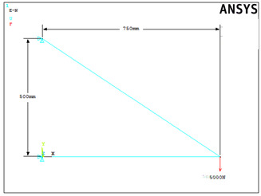
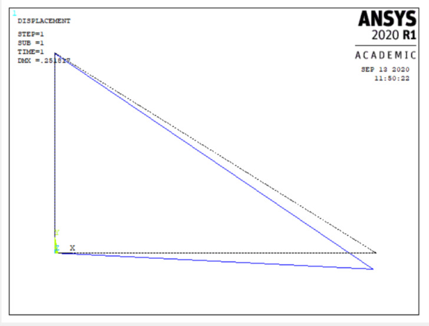

4 STATIC STRUCTURAL ANALYSIS
Structural Analysis Overview
Structural analysis is probably the most common application of the finite element method. The term structural (or structure) implies not only civil engineering structures such as bridges and buildings, but also naval, aeronautical and mechanical structures such as ship hulls, aircraft bodies, and machine housings, as well as mechanical components such as pistons, machine parts and tools.
Types of Structural Analysis
The following types of structural analyses can be performed using ANSYS:
- Static Analysis -- Used to determine displacements, stresses, etc. under static loading conditions, both linear and nonlinear static analyses. Nonlinearities can include plasticity, stress stiffening, large deflection, large strain, hyperelasticity, contact surfaces and creep.
- Modal Analysis -- Used to calculate the natural frequencies and mode shapes of a structure. Several mode-extraction methods are available.
- Harmonic Analysis -- Used to determine the response of a structure to harmonically time-varying loads.
- Transient Dynamic Analysis -- Used to determine the response of a structure to arbitrarily time-varying loads. All nonlinearities mentioned under Static Analysis above are allowed.
- Spectrum Analysis -- An extension of the modal analysis, used to calculate stresses and strains due to a response spectrum or a PSD input (random vibrations).
- Buckling Analysis -- Used to calculate the buckling loads and determine the buckling mode shape. Both linear (eigenvalue) buckling and nonlinear buckling analyses are possible.
- Explicit Dynamic Analysis -- This type of structural analysis is available via the ANSYS LS-DYNA product, which provides an interface to the LS-DYNA explicit finite element program. Explicit dynamic analysis calculates fast solutions for large deformation dynamics and complex contact problems.
The primary unknowns (nodal degrees of freedom) calculated in a structural analysis are displacements. Other quantities such as strains, stresses and reaction forces are then derived from the nodal displacements.
Selecting Elements
Most element types are structural elements, ranging from simple spars and beams to more complex layered shells and large strain solids. Most types of structural analyses can use any of these elements.
Selecting Material Models
For analyses described in this book, the analyst must specify the material that s/he intends to simulate. Using the GUI, the analyst can specify many materials that s/he intends to simulate via an intuitive material model interface. The interface uses a hierarchical tree structure of material categories, intended to assist in choosing the appropriate model for the analysis.
Solution Method
The ANSYS family of products uses the h-method for solving structural problems. The h-method can be used for any type of analysis.
Static Analysis
A static analysis calculates the effects of steady loading conditions on a structure, while ignoring inertia and damping effects, such as those caused by time-varying loads. A static analysis can, however, include steady inertia loads and time-varying loads that can be approximated as static equivalent loads.
Static analysis determines the displacements, stresses, strains, and forces in structures or components caused by loads that do not induce significant inertia and damping effects. Steady loading and response conditions are assumed; that is, the loads and the structure's response are assumed to vary slowly with respect to time. The types of loading that can be applied in a static analysis include:
- Externally applied forces and pressures
- Steady-state inertial forces
- Imposed displacements
- Temperatures
- Fluences.
Linear vs. Nonlinear Static Analyses
A static analysis can be either linear or nonlinear. All types of nonlinearities are allowed - large deformations, plasticity, creep, stress stiffening, contact elements, hyperelastic elements and so on. This section focuses on linear static analyses, with brief references to nonlinearities.
Performing a Static Analysis
Build the Model
Keep the following points in mind when doing a static analysis:
- Both linear and nonlinear structural elements can be used
- Material properties can be linear or nonlinear, isotropic or orthotropic and constant or temperature-dependent
- Define stiffness in some form
- For inertia loads, define the data required for mass calculations, such as density
- For thermal loads, define the coefficient of thermal expansion.
Note the following information about mesh density:
- Regions where stresses or strains vary rapidly require a relatively finer mesh than regions where stresses or strains are nearly constant.
- While considering the influence of nonlinearities, remember that the mesh should be able to capture the effects of the nonlinearities. For example, plasticity requires a reasonable integration point density in areas with high plastic deformation gradients.
Set Solution Controls
Setting solution controls involves defining the analysis type and common analysis options for an analysis, as well as specifying load step options for it. Take advantage of a streamlined solution interface when performing a structural static analysis. The Solution Controls dialog box (Main Menu> Solution> Analysis Type> Sol'n Controls) provides default settings that will work well for many structural static analyses. It is necessary to set only a few of the options. Because the streamlined solution interface is the recommended tool for setting solution controls in a structural static analysis, it is the method that is presented in this section. Solution controls for the analysis can also be set using the menu paths (Main Menu> Solution> Unabridged Menu> option).
Apply the Loads
After the desired solution options are set, apply loads to the model. The load types applicable in a static analysis are Displacements, Velocities, Forces, Moments, Pressures, Temperatures, Fluences, Gravity, Spinning, etc.
Except for inertia and velocity loads, the analyst can define loads either on the solid model or on the finite element model. S/he can also apply boundary conditions via TABLE type array parameters or as function boundary conditions.
Loads can also be applied using TABLE type array parameters. In a structural analysis, valid primary variables are TIME, TEMP, and location (X, Y, Z). When defining the table, TIME must be in ascending order in the table index (as in any table array).
Solve the Analysis
ANSYS is now ready to solve the problem.
- Save a backup copy of the database to a named file (Utility Menu> File> Save as). Then retrieve the model by reentering the ANSYS program and issuing RESUME.
- Start solution calculations (Main Menu> Solution> Solve> Current LS).
- If it is necessary to include additional loading conditions (that is, multiple load steps), repeat the process of applying loads, specifying load step options, saving, and solving for each load step.
- Leave SOLUTION. Close the Solution menu.
Review the Results
Results from a static analysis are written to the structural results file, Jobname.RST. They consist of the following data:
- Primary data: Nodal displacements (UX, UY, UZ, ROTX, ROTY, ROTZ)
- Derived data: Nodal and element stresses, Nodal and element strains, Element forces, Nodal reaction forces and so on.
Postprocessors
These results can be viewed using POST1, the general postprocessor, and POST26, the time-history processor.
- POST1 is used to review results over the entire model at specific sub-steps (time-points). Some typical POST1 operations are explained below.
- POST26 is used in nonlinear static analyses to track specific result items over the applied load history.
Reviewing Results Data
- Read in the database from the database file using Utility Menu> File> Resume from
- Read in the desired set of results. Identify the data set by load step and substep numbers or by time. If a time value is specified for which no results are available, the ANSYS program will perform linear interpolation on all the data to calculate the results at that time. Main Menu> General Postproc> Read Results> By Load Step
- Perform the necessary POST1 operations. Typical static analysis POST1 operations are explained below.
Postprocessing Operations
- Use Main Menu> General Postproc> Plot Results> Deformed Shape to display deformed shape.
- Use Main Menu> General Postproc> List Results> Reaction Solu to list reaction forces and moments.
- Use Main Menu> General Postproc> List Results> Element Solution to list nodal forces and moments.
The sum of all nodal forces and moments for a selected set of nodes can be listed. Select a set of nodes and use this feature to find out the total force acting on those nodes using Main Menu> General Postproc> Nodal Calcs> Total Force Sum.
The total force and total moment at each selected node can also be checked. For a body in equilibrium, the total load is zero at all nodes except where an applied load or reaction load exists: Main Menu> General Postproc> Nodal Calcs> Sum @ Each Node
For line elements, such as beams, spars, and pipes, use Main Menu> General Postproc> Element Table> Define Table to gain access to derived data. Results data are identified by a combination of a label and a sequence number or component name on the ETABLE command.
Use Main Menu> General Postproc> Plot Results> Contour Plot> Nodal Solu or Element Solu to display contours.
Use Main Menu> General Postproc> Element Table> Plot Element Table and Main Menu> General Postproc> Plot Results> Contour Plot> Line Elem Res to contour element table data and line element data.
Use Main Menu> General Postproc> Plot Results> Vector Plot> Predefined to display vectors and Main Menu> General Postproc> List Results> Vector Data to view vector listings.
Use Main Menu> General Postproc> List Results> solution option to produce tabular listings.
4.1. 1-D Problems
W1: Consider a 2m long steel bar of 50mm2 cross sectional area as shown below. Use two element mesh to model this problem. Find nodal displacements, element stresses and reaction. Take Young’s modulus, E=2x105 N/mm2, load=100N.
Data: Length of bar=2000mm, Cross sectional area=50mm2, E=2x105 N/mm2, Load=100N
Sol:
Preprocessing
- Change jobname
File> Change Jobname
Enter ‘Bar with end load’’ and click on ‘OK’.
- Define element types
Preprocessor> Element Type> Add/Edit/Delete
Click on ‘Add..’, highlight ‘Link’, then ‘3D finit stn 180’, click on ‘OK’, then ‘Close’.
- Define the cross sectional area for the Link180
Preprocessor> Sections> Link> Add
Type ‘1’ for ‘Add Link Section with ID’. Type ‘Bar’ for Section Name’. In this problem, the area is 50. Fill in the Link area value. Choose ‘Tension’ for ‘Tension Key and click on ‘OK’, then ‘Close’.
- Define Material Properties
Preprocessor> Material Properties> Material Models> Structural> Linear> Elastic> Isotropic
‘OK’ for material set number 1, then enter 2e5 for EX, then ‘OK’.
- Create nodes at bar nodes
Preprocessor> Modeling> Create> Nodes> In Active CS
Enter 1 for node number (ANSYS would automatically number nodes if this column is left blank). Enter the location as (X,Y,Z)=(0,0,0). Click on ‘Apply’. Continue defining nodes 2 & 3 using the locations based on the sketch of the bar, but after entering the node 3 location, click on ‘OK’ instead of ‘Apply’. So, node 2 is at (X,Y,Z)=(1000,0,0) and node 3 is at (X,Y,Z)=(2000,0,0).
As a check to ensure all nodes were entered correctly, list the nodes.
Utility Menu> List> Nodes
Turn on node numbering.
Utility Menu> PlotCtrls> Numbering
- Create link elements between nodes
Preprocessor> Modelling> Create> Elements> Auto Numbered> Thru Nodes
A picking menu appears. Pick node 1, then node 2 and click on ‘Apply’ in the Picking Menu. Pick node 2, then node 3 and click on ‘OK’ in the Picking Menu.
- Apply constraints and forces on the model.
Solution> Loads> Apply> Structural> Displacement> On Nodes
Pick node 1, then click ‘OK’ in the picking menu that has appeared. Choose ‘ALL DOF’ and use the default displacement value of zero.
Apply the forces.
Solution> Loads> Apply> Structural> Force/Moment> On Nodes
Pick node 3, then ‘OK’ in the picking menu, choose ‘FX’ as the direction of the force, and enter 100 for the force value. Click on ‘OK’.
Solution
- Solve the problem
Solution> Solve> Current LS
Click ‘OK’ in the ‘Solve Current Load Step’ Box
Postprocessing
- Plot the deformed shape
General Postproc> Plot Results> Deformed Shape
Choose ‘Def + undeformed’, then ‘OK’
- List reaction forces
General Postproc> List Results> Reaction Solution
Click on ‘All struc forc F’, and ‘OK’
Print the information in the Listing Box, by clicking, in that box, on File> Print. Or else, just write the information down.
- List a summary, which includes the axial force and stress in each element
General Postproc> List Results> Element Solution> LineElem results> Structural ELEM
Click ‘OK’, and a summary for each element is printed, including the node numbers, from which the corresponding bar element can be identified, and also the axial force (MFORX), and the axial stress (SAXL). Record or print, this information.
- List the x and y direction deflections for each node.
General Postproc> List Results> Nodal Solution> DOF Solution> ALL DOFs
Click ‘OK’. Again, record or print, this information.
- Exit ANSYS
Quit> Save Everything> OK
4.2. 2-D Problems
4.2.1. Truss
W2: A simple truss is shown below. Modulus for material is 200GPa, A=500mm2, force at node 2 in the +y direction of 1,000N. Find the displacements and stresses.
Data: E=2e5N/mm2, A=500mm2, F=1000N
Sol:
Preprocessing
- Change jobname
File> Change Jobname
Enter ‘Truss-1’, and click on ‘OK’.
- Define element types
Preprocessor> Element Type> Add/Edit/Delete
Click on ‘Add..’, highlight ‘Link’, then ‘3D finit stn 180’, click on ‘OK’, then ‘Close’.
- Define the cross sectional area for the Link180
Preprocessor> Sections> Link> Add
Type ‘1’ for ‘Add Link Section with ID’. Type ‘Truss 1’ for Section Name’. In this problem, the area is 500. Fill in the Link area value. Choose ‘Tension’ for ‘Tension Key and click on ‘OK’, then ‘Close’.
- Define Material Properties
Preprocessor> Material Properties> Constant> Isotropic
‘OK’ for material set number 1, then enter 2e5 for EX, then ‘OK’.
- Create nodes at truss joints
Preprocessor> Modeling> Create> Nodes> In Active CS
Enter 1 for node number Enter the location as (X,Y,Z)=(0,0,0). Click on ‘Apply’. Continue defining nodes 2&3 using the locations based on the sketch of the truss, but after entering the node 3 location, click on ‘OK’ instead of ‘Apply’. So, node 2 is at (X,Y)=(100,100) and node 3 is at (X,Y)=(200,0).
As a check to ensure all nodes were entered correctly, list the nodes.
Utility Menu> List> Nodes
Turn on node numbering.
Utility Menu> PlotCtrls> Numbering
- Create link elements between nodes
Preprocessor> Create> Elements> Auto Numbered> Thru Nodes
A picking menu appears. Pick node 1, then node 2, and click on ‘Apply’ in the Picking Menu. Pick node 2, then node 3, and click on ‘OK’ in the Picking Menu.
- Apply constraints and forces on the model.
Solution> Loads> Apply> Structural> Displacement> On Nodes
Pick nodes 1 & 3, then click ‘OK’ in the picking menu that has appeared. Choose ALL DOF, and use the default displacement value of zero.
Apply the forces.
Solution> Loads> Apply> Structural> Force/Moment> On Nodes
Pick node 2, then ‘OK’ in the picking menu, choose ‘FY’ as the direction of the force, and enter 1,000 for the force value. Click on ‘OK’.
Solution
- Solve the problem
Solution> Solve> Current LS
Click ‘OK’ in the ‘Solve Current Load Step’ Box.
Postprocessing
- Plot the deformed shape
General Postproc> Plot Results> Deformed Shape
Choose ‘Def + undeformed’, then ‘OK’.
- List reaction forces
General Postproc> List Results> Reaction Solution
Click on ‘All struc forc F’, and ‘OK’.
Print the information in the Listing Box, by clicking, in that box, on File> Print. Or else, just write the information down.
- List a summary, which includes the axial force and stress in each element
General Postproc> List Results> Element Solution> LineElem results> Structural ELEM
Click ‘OK’, and a summary for each element is printed, including the node numbers, from which the corresponding truss member can be identified, and also the axial force (MFORX), and the axial stress (SAXL). Record or print, this information.
- List the y direction deflections for each node.
General Postproc> List Results> Nodal Solution> DOF Solution> Y-Component of displacement
Click ‘OK’. Again, record or print, this information.
- Exit ANSYS
Quit> Save Everything> OK
W3: Find the displacements and stresses in the truss shown below. Consider area=300mm2, E=200GPa.

Data: A=300mm2, E=2e5N/mm2, F=5,000N
Sol:
Preprocessing
- Change jobname
File > Change Jobname
Enter ‘Truss-2’, and click on ‘OK’.
- Define element types
Preprocessor > Element Type > Add/Edit/Delete
Click on ‘Add..’, highlight ‘Link’, then ‘3D finit stn 180’, click on ‘OK’, then ‘Close’.
- Define the real constants for the Link180, which are cross-sectional area and initial strain
Preprocessor> Real Constants> Add
Click ‘OK’ for ‘Type 1 LINK180’
In this problem, there is no initial strain (leave blank), and the area is 300. After filling in the area value, click on ‘OK’, then ‘Close’.
- Define Material Properties
Preprocessor> Material Properties> Material Models> Structural Linear> Elastic> Isotropic>
‘OK’ for material set number 1, then enter 2e5 for EX and ‘0.3’ for ‘PRXY’ , then ‘OK’.
- Create nodes at truss joints
Preprocessor> Modeling> Create> Nodes> In Active CS
Enter 1 for node number. Enter the location as (X,Y,Z)=(0,0,0). Click on ‘Apply’. Continue defining nodes 2&3 using the locations based on the sketch of the truss, but after entering the node 3 location, click on ‘OK’ instead of ‘Apply’. So, node 2 is at (X,Y)=(750,0) and node 3 is at (X,Y)=(0,500).
As a check to ensure all nodes were entered correctly, list the nodes
Utility Menu>List> Nodes
Turn on node numbering.
Utility Menu> PlotCtrls> Numbering
- Create link elements between nodes
Preprocessor> Create> Elements> Auto Numbered> Thru Nodes
A picking menu appears. Pick node 1, then node 2, and click on ‘Apply’ in the Picking Menu. Pick node 2, then node 3, and click on ‘OK’ in the Picking Menu.
- Apply constraints and forces on the model
Solution > Loads > Apply > Structural > Displacement > On Nodes
Pick nodes 1 & 3, then click ‘OK’ in the picking menu that has appeared.
Choose ALL DOF.
Apply the forces.
Solution> Loads> Apply> Structural> Force/Moment> On Nodes
Pick node 2, then ‘OK’ in the picking menu, choose ‘FY’ as the direction of the force, and enter -5000 for the force value. Click on ‘OK’.
Solution
- Solve the problem
Solution> Solve> Current LS
Click ‘OK’ in the ‘Solve Current Load Step’ Box.
Postprocessing
- Plot the deformed shape
General Postproc> Plot Results> Deformed Shape
Choose ‘Def + undeformed’, then ‘OK’.
- List reaction forces
General Postproc> List Results> Reaction Solution
Click on ‘All items’, and ‘OK’.
Print the information in the Listing Box, by clicking, in that box, on ‘File > Print’. Or else, just write the information down.
- List a summary, which includes the axial force and stress in each element.
General Postproc> List Results> Element Solution> Favourites> Element Solution>
Click ‘OK’, and a summary for each element is printed, including the node numbers, from which the corresponding truss member can be identified, Record or print, this information.
- List the x and y direction deflections for each node:
General Postproc> List Results> Nodal Solution> DOF Solution> Displacement vector sum
Click ‘OK’. Again, record or print, this information.
- Exit ANSYS
Quit> Save Everything> OK
W4: Model and analyze the following simple truss structure geometry, loading, and boundary conditions. The model consists of three elements connected by three nodes. F=5,000N. Use ANSYS Link180 elements.
Data: A=300mm2, E=7e4, F=5,000N
Sol:
Preprocessing
- Change jobname
File> Change Jobname
Enter ‘Truss-3’, and click on ‘OK’.
- Define element types
Preprocessor> Element Type> Add/Edit/Delete
Click on ‘Add..’, highlight ‘Link’, then ‘3D finit stn 180’, click on ‘OK’, then ‘Close’.
- Define the sections for the Link180
Preprocessor> Sections > Link> Add
Enter unique section ID, say ‘1’ and Click ‘OK’ for ‘Add Link Selection’. Enter unique Section Name, say ‘A’
In this problem, and the area is 300. Fill in the area value, click on ‘OK’.
- Define Material Properties
Preprocessor> Material Properties> Constant> Isotropic
‘OK’ for material set number 1, then enter 7e4 for EX, then ‘OK’.
- Create nodes at truss joints
Preprocessor> Modeling> Create> Nodes> In Active CS
Enter 1 for node number (ANSYS would automatically number nodes if this column is left blank). Enter the location as (X,Y,Z)=(0,0,0). Click on ‘Apply’. Continue defining nodes 2&3 using the locations based on the sketch of the truss, but after entering the node 3 location, click on ‘OK’ instead of ‘Apply’. So, node 2 is at (X,Y)=(400,0) and node 3 is at (X,Y)=(0,250).
As a check to ensure all nodes were entered correctly, list the nodes:
Utility Menu> List> Nodes
Turn on node numbering.
Utility Menu> PlotCtrls> Numbering
- Create link elements between nodes
Preprocessor> Create> Elements> Auto Numbered> Thru Nodes
A picking menu appears. Pick node 1, then node 2, and click on ‘Apply’ in the Picking Menu. Next pick node 2, then node 3, and click on ‘Apply’ in the Picking Menu. Lastly pick node 3, then node 1, and click on ‘OK’ in the Picking Menu.
- Apply constraints and forces on the model
Solution> Loads> Apply> Structural> Displacement> On Nodes
Pick node 1, then click ‘OK’ in the picking menu that has appeared. Choose ALL DOF, and use the default displacement value of zero. Pick node 2, then click ‘OK’. Choose UX, and use the default displacement value of zero. Apply the forces.
Solution > Loads > Apply > Structural > Force/Moment > On Nodes
Pick node 2, then ‘OK’ in the picking menu, choose ‘FY’ as the direction of the force, and enter -5000 for the force value. Click on ‘OK’.
Solution
- Solve the problem
Solution> Solve> Current LS
Click ‘OK’ in the ‘Solve Current Load Step’ Box.
Postprocessing
- Plot the deformed shape
General Postproc> Plot Results> Deformed Shape
Choose ‘Def + undeformed’, then ‘OK’.

- List reaction forces
General Postproc> List Results> Reaction Solution
Click on ‘All struc forc F’, and ‘OK’.
Print the information in the Listing Box, by clicking, in that box, on ‘File > Print’. Or else, just write the information down.
- List a summary, which includes the axial force and stress in each element
General Postproc> List Results> Element Solution> Favourites> Element Solution>
Click ‘OK’, and a summary for each element is printed, including the node numbers, from which the corresponding truss member can be identified,. Record or print, this information.
- List the x and y direction deflections for each node:
General Postproc> List Results> Nodal Solution> DOF Solution>
Click ‘OK’. Again, record or print, this information.
- Exit ANSYS
Quit> Save Everything> OK
W5: Model and analyze the truss shown below. Cross-sectional area of truss members = 3.0E-4m2; Modulus of Elasticity = 207GPa.
Data: E=2.07e11N/m2, Area=3e-4m2
Sol:
Preprocessing
- Change jobname
File> Change Jobname
Enter ‘Bridge Truss’, and click on ‘OK’.
- Define element types
Preprocessor> Element Type> Add/Edit/Delete
Click on ‘Add..’, highlight ‘Link’, then ‘3D finit stn 180’, click on ‘OK’, then ‘Close’. Note that in ANSYS this element is sometimes referred to as ‘LINK 180’, because it is element type 180 in the ANSYS element library.
- Define the section for the
Preprocessor> Sections > Add
Enter area = 3e-4.
- Define Material Properties
Preprocessor> Material Properties> Constant> Isotropic
‘OK’ for material set number 1, then enter 2.07E11 for EX, then ‘OK’.
- Create nodes at truss joints
Preprocessor> Modeling> Create> Nodes> In Active CS
Enter 1 for node number. Enter the location as (X,Y,Z)=(0,0,0). Note that the locations are to be entered in meters, with node 1 located at the origin of the global x-y-z Cartesian coordinate system. Leave the entries for rotation angles blank. (Note: For this problem, all nodes will be in the X-Y plane, with Z=0). Click on ‘Apply’. Continue defining nodes 2-8 using the locations based on the sketch of the truss, but after entering the node 8 location, click on ‘OK’ instead of ‘Apply’. So, node 2 is at (X,Y)=(4,0), node 3 is at (X,Y)=(8,0), node 4 is at (X,Y)=(12,0), node 5 is at (X,Y)=(16,0), node 6 is at (X,Y)=(4,4), node 7 is at (X,Y)=(8,4), and node 8 is at (X,Y)=(12,4). The dimensions entered are in meters, and on the node definition menu, for this case, rotation angles are ignored, and for all nodes, Z=0.
As a check to ensure all nodes were entered correctly, list the nodes:
Utility Menu> List> Nodes
If any errors were made in defining the nodes, redefine a node by repeating the procedure of step 5. Of course, it is not necessary to redefine all nodes simply to move one. Just repeat the node creation command for the incorrectly placed node.
Turn on node numbering.
Utility Menu> PlotCtrls> Numbering
Check ‘Node Numbering’, then click ‘OK’. The node numbers may already be showing, but this will force the display of node numbers on subsequent plots.
- Create link elements between nodes.
Preprocessor> Create> Elements> Auto Numbered >Thru Nodes
A picking menu appears. Pick node 1, then node 2, and click on ‘Apply’ in the Picking Menu. Continue creating elements using the definitions listed in the table below. After picking the nodes for the last element (element 13), choose ‘OK’ (instead of ‘Apply’) to define the element and close the picking menu.
| Element | Node I | Node J |
|---|
| 1 | 1 | 2 |
| 2 | 2 | 3 |
| 3 | 3 | 4 |
| 4 | 4 | 5 |
| 5 | 6 | 7 |
| 6 | 7 | 8 |
| 7 | 6 | 2 |
| 8 | 3 | 7 |
| 9 | 4 | 8 |
| 10 | 1 | 6 |
| 11 | 6 | 3 |
| 12 | 3 | 8 |
| 13 | 5 | 8 |
- Apply constraints and forces on the model.
Solution> Loads> Apply> Structural> Displacement> On Nodes
Pick node 1, then click ‘OK’ in the picking menu that has appeared. Choose ALL DOF, and use the default displacement value of zero. Click on ‘Apply’. Pick node 5, then click ‘OK’ in the picking menu. To constrain this node in the Y-direction only, Click on ‘UY’. Make sure to unselect the ‘ALL DOF’ label! If the ‘ALL DOF’ label is highlighted, unselect it by clicking on it. After confirming that only ‘UY’ is highlighted, click ‘OK’.
Apply the forces.
Solution> Loads> Apply> Structural> Force/Moment> On Nodes
Pick node 4, then ‘OK’ in the picking menu, choose ‘FY’ as the direction of the force, and enter -150 for the force value. Click on ‘Apply’. Pick node 3, click ‘OK’ in the picking menu, and enter -125 for the force value (still in the FY direction). Click on ‘OK’.
Solution
- Solve the problem
Solution> Solve> Current LS
Click ‘OK’ in the ‘Solve Current Load Step’ Box.
Postprocessing
- Plot the deformed shape
General Postproc> Plot Results> Deformed Shape
Choose ‘Def + undeformed’, then ‘OK’.
- List reaction forces
General Postproc> List Results> Reaction Solution
Click on ‘All struc forc F’, and ‘OK’.
Print the information in the Listing Box, by clicking, in that box, on ‘File > Print’. Or else, just write the information down.
- List a summary, which includes the axial force and stress in each element:
General Postproc> List Results> Element Solution> Favourites> Element Solution>
Click ‘OK’, and a summary for each element is printed, including the node numbers, from which the corresponding truss member can be identified. Record or print, this information.
- List the x and y direction deflections for each node:
General Postproc> List Results> Nodal Solution> DOF Solution>
Click ‘OK’. Again, record or print, this information.
- Exit ANSYS
Quit> Save Everything> OK
W6: A tower is made up of trusses. The four trusses at the top are each 2m in length. The cross section of each of the truss members is 6.25e-3sq.m. Assume the structure is made of steel with modulus of elasticity E=200GPa. The tower is constrained along X and Y directions at the bottom left corner, and along Y direction at the bottom right corner. The tower is loaded at the top. The load is in vertical direction only, and its magnitude is 4000N. Determine deflection at each joint. Determine stress in each member. Determine reaction forces at the base.
Data: Height of each truss=2m, cross sectional area=6.25e-3sq.m., E=2e11N/m2, Load=-4000N
Sol: A truss is a structural element that experiences loading only in the axial direction. In this example a 2-D Truss element will be used. A power transmission tower is a common example of a structure that is made up of only truss members. These towers are actually 3-D structures, but for the sake of simplicity a cross-sectional face of the tower will be taken. The tower is mainly subjected to loading in the vertical direction due to the weight of the cables. Also it is subjected to forces due to wind. In this example only loading due to the weight of the cables, which is in the vertical direction, will be considered.
Preprocessing
- Model the structure
Utility Menu> Workplane> WP Settings
The following window comes up
Check the Cartesian and Grid Only buttons
Enter Snap Incr=0.5, Spacing=0.5, Min=0, Max=10.
Main Menu> Preprocessor> Modeling> Create> Keypoints> On Working Plane
The following window comes up. Now pick the end points of the truss.
Select the keypoints on the workplane grid. The keypoints should look like this.
If the complete workplane cannot be seen then go to Utility Menu> PlotCntrls> Pan Zoom Rotate and zoom out to see the entire workplane
- Now create lines connecting the keypoints
Preprocessor> Modeling> Create> Lines> Lines> Straight Line
Create lines by picking keypoints to make the figure shown below
- Define material properties
Main Menu> Preprocessor> Material Props> Material Models
In the window that comes up, for Material Model 1, choose Structural> Linear> Elastic> Isotropic
Enter 1 for the Material Property Number and click ‘OK’. The following window comes up.
Fill in 2e11 for the Young's modulus and 0.3 for minor Poisson's Ratio. Click ‘OK’.
- Define element properties
Select element type.
Preprocessor> Element Type> Add/Edit/Delete...
In the 'Element Types' window that opens click on Add... The following window opens.
Type 1 in the Element type reference number
Click on Structural Link and select 3D finit stn. Click OK. Close the 'Element types' window.
So now Element type 1 is selected to be a structural Link180 element. The trusses will be modeled as elements of Type 1, i.e. structural link element.
- Now define the cross sectional area for this element.
Preprocessor> Real Constants
In the ‘Real Constants’ dialog box that comes up click on Add
In the ‘Element Type for Real Constants’ that comes up click ‘OK’. The following window comes up.
Type 6.25e-3 for cross sectional area and click on ‘OK’.
Now the cross sectional area of the link element is defined.
- Mesh the model
Divide the tower into elements
Preprocessor> Meshing> Size Cntrls> ManualSize> Lines> All Lines
In the menu that comes up type 1 in the field for 'Number of element divisions'.
This divides each of the lines in the figure into 1 element.
Click on ‘OK’. Now the figure is meshed, ANSYS will automatically divide each line into 1 element.
Preprocessor> Meshing> Mesh> lines
Select all the lines and click on OK in the ‘Mesh Lines’ dialog box.
Now each line is a truss element (Element 1).
- Define boundary conditions and constraints
Apply boundary conditions
The tower is constrained in the X and Y directions at the bottom left corner and in the Y direction at the bottom right corner.
Main Menu> Preprocessor> Loads> Define Loads> Apply> Structural> Displacement> On Keypoints
Select the keypoint on displacement constraints are to be applied. The following window comes up.
Select UX and UY for the bottom left corner and UY for the bottom right corner and lick OK. The default displacement value is taken to be zero.
- Apply forces
Main Menu> Preprocessor> Loads> Define Loads> Apply> Structural> Forces/Moment> On Nodes
Select the top node.
Click on OK in the 'Apply F/M on Nodes' window. The following window will appear. Select FY and enter 4000 as the Force/Moment value. Click on ‘OK’.
The figure on the ANSYS Graphics window will look like the following.
Solution
- Solve the problem.
Main Menu> Solution> Analysis Type> New Analysis
Select static and click on ‘OK’.
Solution> Solve> Current LS
Postprocessing
- List the results.
General Postproc> List Results> Nodal Solution
Select DOF solution and Displacement vector sum. Click on ‘OK’. The nodal displacements will be listed.
List the stresses for each element by clicking Gen Postproc > List Results > Element Solution.
Now select LineElem Results.
4.2.2. Frames
W7: The members have a annular cross-section. The cross sections (A) of each of the truss members is 5.5e-3sqm. The structure is made of steel with modulus of elasticity, E=210GPa. All the DOFs are constrained at the bottom end. The structure is loaded at the ends of the two arms. The load is in the negative Y direction. The load value is 4000N each. Determine deflections at the points of application of load. Determine the maximum stress in the structure.
Data: E=210GPa, area= 5.5e-3sqm, Load = 4000N
Sol:
Preprocessing
- Model the structure
Utility Menu> Workplane> WP Settings
Check the Cartesian and Grid Only buttons
Enter Min=0, Max=8, Spacing= , Snap Increment= 0.5
Go to the ANSYS Main Menu
Preprocessor> Modeling> Create> Keypoints> On Working Plane
Now create lines connecting the keypoints
Preprocessor> Modeling> Create> Lines> Lines> Straight Line
Create lines by picking keypoints
Define material properties
Main Menu> Preprocessor> Material Props> Material Models
choose Structural> Linear> Elastic> Isotropic.
Fill in 2.1e11 for the Young's modulus and 0.3 for Poisson's Ratio. Click OK
- Define element properties
Select element type
Preprocessor> Element Type> Add/Edit/Delete...
Click on Add...
Click on Structural Beam and select 2 node 188. Click OK.
- Define the section properties for this element.
Preprocessor> Sections> Beam> Common Sections
Enter B=20, H=30
- Mesh the model
Divide the structure into elements
Preprocessor> Meshing> Size Controls> Manual Size> Lines> All Lines
Type ‘1’ in the field for 'Number of element divisions'. Click on OK.
Preprocessor> Meshing> Mesh> Lines
Select all the lines and click on OK in the ‘Mesh Lines’ dialog box.
- Define boundary conditions and constraints
Apply boundary conditions
The tower is constrained in the DOFs at the bottom node.
Go to Main Menu
Preprocessor> Loads> Define Loads> Apply> Structural> Displacement> On Keypoints
Select the keypoint on which displacement constraints are to be applied.
Select All DOF and click ‘OK’.
- Apply Forces
Preprocessor> Loads> Define Loads> Apply> Forces/Moment> On Nodes
Select the top right node and the top left node.
Click on OK in the 'Apply F/M on Nodes' window.
Enter -4000 for force.
The figure looks like this now.
Solution
- Solve the problem.
Main Menu> Solution> Analysis Type> New Analysis
Select static and click on ‘OK’.
Solution> Solve> Current LS
Postprocessing
- List the results
General Postprocessing> List Results> Nodal Solution
Select DOF solution and All Us. Click on ‘OK’. The nodal displacements will be listed.
- Similarly list the stresses for each element by clicking
Gen Postprocessing> List Results> Element Solution
Now select LineElem Results. The following table will be listed.
- Plot the displacements and stress.
General Postproc> Plot Results> Contour Plot> Element Solution
The following window will come up.
Select a stress to be plotted and click ‘OK’. The output will be like this.
W8: A shelter truss is shown below. Truss members 1-5 are made with mild steel. Modulus for steel is 200GPa, and cross sectional area=300mm2. Members 6-9 are made with aluminium. Modulus of aluminum is 70GPa and cross sectional area= 250mm2. A vertical downward force of 5000N acts at extreme right corner in the -Y direction. Find the displacements and stresses.
Data: E-1=2e5, R-1=300mm2, E-2=7e4, R-2=250mm2, F=-5000N
Sol:
Preprocessing
- Change jobname
File> Change Jobname
Enter ‘Shelter Truss’, and click on ‘OK’.
- Define element types
Preprocessor> Element Type> Add/Edit/Delete
Click on ‘Add..’, highlight ‘Link’, then ‘3D finit stn 180’, click on ‘OK’, then ‘Close’.
- Define first material properties
Preprocessor > Material Properties > Constant- Isotropic
‘OK’ for material set number 1, then enter 2E5 for EX, then ‘OK’.
Define second material properties
Preprocessor> Material Properties> Material Models>
Select ‘New Model’ under ‘Material’
Under ‘Material Models Available’ select Structural> Linear> Elastic> Isotropic
‘OK’ for material set number 2, then enter 7E4 for EX, then ‘OK’.
- Define the real constants for first group of members:
Preprocessor> Real Constants> Add/Edit/Delete
Click ‘OK’ for ‘Set 1 LINK180’
In this problem, there is no initial strain (leave blank), and the area is 300. After filling in the area value, click on ‘OK’, then ‘Close’.
Define the real constants for second group of members:
Preprocessor> Real Constants> Add/Edit/Delete
Click Add. Real Constant Set Number 2, for LINK180 appears. Click ‘OK’ for ‘Set 2 LINK180’. In this problem, there is no initial strain (leave blank), and the area is 250. After filling in the area value, click on ‘OK’, then ‘Close’.
- Create nodes at truss joints
Preprocessor> Modeling> Create> Nodes> In Active CS
Enter 1 for node number (ANSYS would automatically number nodes if this column is left blank). Enter the location as (X,Y,Z)=(0,0,0). Click on ‘Apply’. Continue defining nodes 2-6 using the locations based on the sketch of the truss, but after entering the node 6 location, click on ‘OK’ instead of ‘Apply’. So, node 2 is at (X,Y)=(250,0), node 3 is at (X,Y)=(0,500), node 4 at (X,Y)=250,500, node 5 is at (X,Y)=(500,750) and node 6 at (X,Y)=(500,500).
As a check to ensure all nodes were entered correctly, list the nodes.
Utility Menu> List> Nodes
Turn on node numbering.
Utility Menu> PlotCtrls> Numbering
- Create first group of elements(1-5)
Select first set of real constant & material properties
Preprocessor> Create> Elements> Auto Numbered> Thru Nodes
A picking menu appears. Pick node 3, then node 5, and click on ‘Apply’ in the Picking Menu. Similarly create other elements.
Now create second group of elements (6-9)
Switch to second set of real & material properties. Pick node 3, then node 5, and click on ‘Apply’ in the Picking Menu. Similarly create other elements.
- Apply constraints and forces on the model.
Solution> Loads> Apply> Structural> Displacement> On Nodes
Pick nodes 1, then click ‘OK’ in the picking menu that has appeared. Choose ALL DOF, and use the default displacement value of zero. Now pick nodes 2, then click ‘OK’ in the picking menu that has appeared. Choose UY, and use the default displacement value of zero.
Apply the forces.
Solution> Loads> Apply> Structural> Force/Moment> On Nodes
Pick node 6, then ‘OK’ in the picking menu, choose ‘FY’ as the direction of the force, and enter -5000 for the force value. Click on ‘OK’.
Solution
- Solve the problem
Solution> Solve> Current LS
Click ‘OK’ in the ‘Solve Current Load Step’ Box.
Postprocessing
- Plot the deformed shape
General Postproc> Plot Results> Deformed Shape
Choose ‘Def + undeformed’, then ‘OK’.
List reaction forces
General Postproc> List Results> Reaction Solution
Click on ‘All struc forc F’, and ‘OK’.
Print the information in the Listing Box, by clicking, in that box, on ‘File > Print’. Or else, just write the information down.
- List a summary, which includes the axial force and stress in each element:
General Postproc> List Results> Element Solution> LineElem results> Structural ELEM
Click ‘OK’, and a summary for each element is printed, including the node numbers, from which the corresponding truss member can be identified, and also the axial force (MFORX), and the axial stress (SAXL). Record or print, this information.
- List the x and y direction deflections for each node:
General Postproc> List Results> Nodal Solution> DOF Solution> ALL DOFs
Click ‘OK’. Again, record or print, this information.
- Exit ANSYS
Quit> Save Everything> OK
W10: Determine the end deflection and root bending stress of a steel cantilever beam of length 250mm shown below.
Data: E=2e5N/mm2, µ=0.3, Length=250mm, Load=250N, Width=8mm, Height=12mm
W10: Determine the end deflection and root bending stress of a steel cantilever beam of length 250mm shown below.
Data: E=2e5N/mm2, µ=0.3, Length=250mm, Load=250N, Width=8mm, Height=12mm
Sol:
Preprocessing
- Change jobname.
File> Change Jobname
Enter ‘Cantilever with point load’, and click on ‘OK’.
- Define element type.
Preprocessor> Element Type> Add/Edit/Delete
Click on ‘Add..’, highlight ‘Beam’, then ‘2node 188’, click on ‘OK’, click ‘Options’, select Quadratic Form’ for Element behavior in BEAM188 element type options, then ‘Close’.
- Define the section properties for the BEAM188 elements.
Preprocessor> Sections> Beam> Common Sections>
The appropriate values for the given geometry are: B=8; H=12, Nb=4, Nh=6 and click ‘OK’.
- Define material properties.
Preprocessor> Material Properties> Constant> Isotropic
‘OK’ for material set number 1, then, enter 2e5 for EX, then ‘OK’.
- Create key Points.
Preprocessor> Modeling> Create> Key Points> In Active CS
Enter 1 for node number (ANSYS would automatically number nodes if this is left blank). Enter the location as (x,y,z)=(0,0,0). Leave the entries for rotation angles blank. (For this problem, all nodes will be on the x-axis, with y=0 and z=0). Click on ‘Apply’. Define node 2 at (x,y,z)=(250,0,0), define node 3 at (x,y,z)=(0,30,0), then click on ‘OK’ instead of ‘Apply’.
- Create beam elements between keypoints.
Draw line joining the key points.
Preprocessor> Modeling Create> Lines> Line> Straight Line
Pick key points 1 and 2, OK
Preprocessor> Meshing> Mesh Tool
Select ‘Lines’ under ‘Element Attributes’, click ‘Set’
Pick the line and click ‘OK’ in the Line Attributes.
Preprocessor> Meshing> Mesh Attributes> Picked Lines
Choose ‘Yes’ for Pick Orientation Key Point(s), OK. Select key point 3, OK.
In the Mesh Tool window, click ‘set’ for lines under Size Controls. Click on line and OK. Assign 10 for No. of element divisions under Element on Picked Lines, OK.
Click Mesh in Mesh Tool window. Click the line, and click OK in Mesh Lines window.
Solution
- Apply constraints and forces on the model.
Solution> Loads> Apply > Structural > Displacement > On Nodes
Pick Left extreme node, then click ‘OK’ in the picking menu that has appeared. Choose ALL DOF, and use the default value of zero. Click on ‘OK’.
Solution > Loads > Apply> Structural> Force/Moment> On Nodes
Pick extreme right node , then ‘OK’ in the picking menu, choose ‘FY’ as the direction of the force, and enter ‘-250’ for the force value. Click on ‘OK’.
- Solve the problem.
Solution> Solve> Current LS
Click ‘OK’ in the ‘Solve Current Load Step’ Box.
Postprocessing
- Plot the deformed shape.
General Postproc> Plot Results> Deformed Shape
Choose ‘Def + undeformed’, then ‘OK’.
- List reaction forces.
General Postproc> List Results> Reaction Solution
Use the default: ‘All items’; and click on ‘OK’.
- List nodal displacements
General Postproc> List Results> Nodal Solution> DOF Solution> Displacement vector sum
- Define element table items for subsequent plotting and listing of various stress results.
For line elements, such as beam elements, to generate certain stress results, define an element table, using the ETABLE command. Note that each element is defined by two end nodes, denoted by node i and node j. Node i is the first of the two nodes defined when the element was created. The form of the GUI path to define a table containing the shear force, at node i, for each element, is:
Main Menu> General Postproc> Element Table> Define Table> Add
SFy for user label, Select By sequence num and SMISC, 5, click Apply
SFy for user label, Select By sequence num and SMISC, 18, click ‘OK’
Now plot shear force diagram.
General Postproc> Plot Results> Contour Plot> Line Ele Res
Enter LabI=SMIS5, LabJ=SMIS18
The entries in this command pertain specifically to the BEAM188 element. In the command above, ‘SFyI’ is simply a label chosen by the user. Practically any other text string could be used in this field. However, it must not have more than eight characters, and it cannot be identical to any general ANSYS predefined label. ‘SMISC’ is the appropriate item for shear force in BEAM188 elements. Also, the ‘5’ shown as the last entry is correct sequence number on the ETABLE command, assuming BEAM188 elements are used, and the user wants to store the bending stresses, at node i for each element.
If the user also wants to define an element table in which the bending moment, at node j for each element is stored, the command that could be used is similar to that above. However, the user should choose a different identifying label ‘My’, and the value of the last entry for this case is ‘2 and 15’.
Main Menu> General Postproc> Element Table> Define Table> Add
BMzI for user label, Select By sequence num and SMISC, 2, click ‘Apply’
SFyJ for user label, Select By sequence num and SMISC, 15, click ‘OK’
Now plot bendind moment diagram.
General Postproc> Plot Results> Contour Plot> Line Ele Res
Enter LabI=SMIS2, LabJ=SMIS15
- List element table results.
Assuming all four of the above ETABLE commands were entered, then a listing of each stored stress component can be obtained with the menu path:
General Postproc> List Results> Elem Table Data
Then, highlight the desired labels, and click on ‘OK’. The stresses corresponding to the chosen labels will be listed by element number.
- Plot element stresses.
General Postproc> Plot Results> Line Elem Res
In the dialogue box that opens, select the label ‘MzI’ for the LABI entry, and the label ‘MzJ’ for the LABJ entry. The optional scale factor can be left as ‘1’ if desired, and the user can choose whether or not to include on the plot either ‘Deformed Shape Only’, ‘Deformed + Undeformed’, or ‘Deformed + Undeformed Edge’.
Of course, the other component labels could be chosen instead, if desired.
General Postproc> Plot Results> Elem Table
In the dialogue box that opens, select the label ‘MzI’, or of course, any of the other previously defined labels could be chosen. Also, the user has the option of averaging nodal values.
- Exit ANSYS.
Quit> Save Everything> OK
W11: Analyze simple cantilever beam problem shown below. The beam is made with 2 different materials.
Data: Width-1=10mm, Height-1=50mm, Length-1=150, E-1=.7e5N/mm2, µ-1=0.3, Width-2=15mm, Height=25mm, Length-2=300, E-2=2e5N/mm2, µ-2=0.3, F=500N
Sol:
Preprocessing
- Change jobname.
File> Change Jobname
Enter ‘Stepped Cantilever Beam with point load’, and click on ‘OK’.
- Define element type:
Preprocessor> Element Type> Add/Edit/Delete
Click on ‘Add..’, highlight ‘Beam’, then ‘2 node 188’, click on ‘OK’, then ‘Close’.
- Define the section properties for the BEAM188 elements:
Preprocessor> Sections> Beam> Common Sections
Click ‘OK’ for ‘Type 1 BEAM188’
The appropriate values for the left beam are: B=10; H=50, Nb=2, Nh=5.
Click ‘Apply’. The values for right beam are B=15, H=25, Nb=3, Nh=5, OK
- Define material properties.
Preprocessor> Material Properties> Constant> Isotropic
‘OK’ for material set number 1, then, enter 0.7e5 for EX, µ=0.3 then ‘OK’.
Now select ‘New Model’ under ‘Material’ in ‘Define Material Model Behaviour’.
Assign 2 for Define Material ID in Define Material ID window. Enter 2e5 for EX, µ=0.3 then ‘OK’.
- Create key Points.
Preprocessor> Modeling> Create> Key Points> In Active CS
Enter 1 for node number (ANSYS would automatically number nodes if this is left blank). Enter the location as (x,y,z)=(0,0,0). Leave the entries for rotation angles blank. (For this problem, all nodes will be on the x-axis, with y=0 and z=0). Click on ‘Apply’. Define node 2 at (x,y,z)=(150,0,0), define node 3 at (x,y,z)=(450,0,0), define node 4 at (x,y,z)=(0,30,0), define node 5 at (x,y,z)=(150,30,0), then click on ‘OK’ instead of ‘Apply’.
- Create beam elements between keypoints.
First create left part.
Draw first line joining the key points 1 and 2.
Preprocessor> Modeling Create> Lines> Line> Straight Line
Pick key points 1 and 2, OK
Preprocessor> Meshing> Mesh Tool
Select ‘Lines’ under ‘Element Attributes’, click ‘Set’
Pick the line and click ‘OK’ in the Line Attributes. Choose ‘Yes’ for Pick Orientation Key Point(s), OK. Select key point 4, OK.
In the Mesh Tool window, click ‘set’ for lines under Size Controls. Click on line and OK. Assign 3 for No.of element divisions under Element on Picked Lines, OK.
Click Mesh in Mesh Tool window. Click the line, and click OK in Mesh Lines window.
Now create right part. Draw second line joining key points 2 and 3.
Preprocessor> Modeling Create> Lines> Line> Straight Line
Pick key points 1 and 2, OK. Attribute second set of properties.
Preprocessor> Meshing> Mesh Tool
Preprocessor> Meshing> Mesh attributes> Default Attributes
Assign 2 for Material number, 2 for section number, OK
Select ‘Lines’ under ‘Element Attributes’, click ‘Set’
Pick the line and click ‘OK’ in the Line Attributes. Choose ‘Yes’ for Pick Orientation Key Point(s), OK. Select key point 5, OK.
In the Mesh Tool window, click ‘set’ for lines under Size Controls. Click on line and OK. Assign 6 for No.of element divisions under Element on Picked Lines, OK.
Click Mesh in Mesh Tool window. Click the line, and click OK in Mesh Lines window.
Solution
- Apply constraints and forces on the model.
Solution> Loads> Apply> Structural> Displacement> On Nodes
Pick node 1, then click ‘OK’ in the picking menu that has appeared. Choose ALL DOF, and use the default value of zero. Click on ‘OK’.
Solution> Loads> Apply> Structural> Force/Moment> On Nodes
Pick node 11, then ‘OK’ in the picking menu, choose ‘FY’ as the direction of the force, and enter ‘500’ for the force value. Click on ‘OK’.
- Solve the problem.
Solution> Solve> Current LS
Click ‘OK’ in the ‘Solve Current Load Step’ Box.
Postprocessing
- Plot the deformed shape.
General Postproc> Plot Results> Deformed Shape
Choose ‘Def + undeformed’, then ‘OK’.
- List reaction forces.
General Postproc > List Results > Reaction Solution
Use the default: ‘All items’; and click on ‘OK’.
- List nodal displacements
General Postproc> List Results> Nodal Solution> DOF Solution> ALL DOFs
- Define element table items for subsequent plotting and listing of various stress results.
For line elements, such as beam elements, to generate certain stress results, define an element table, using the ETABLE command. Note that each element is defined by two end nodes, denoted by node i and node j. Node i is the first of the two nodes defined when the element was created. The form of the GUI path to define a table containing the shear force at the ‘top’ of the beam, at node i, for each element, is
Main Menu> General Postproc> Element Table> Define Table> Add
SFy for user label, Select By sequence num and SMISC, 6, click Apply
SFy for user label, Select By sequence num and SMISC, 19, click OK
Now plot shear force diagram.
General Postproc> Plot Results> Contour Plot> Line Ele Res
Enter LabI=SMIS5, LabJ=SMIS18
The entries in this command pertain specifically to the BEAM188 element. In the command above, ‘SFyI’ is simply a label chosen by the user. Practically any other text string could be used in this field. However, it must not have more than eight characters, and it cannot be identical to any general ANSYS predefined label. ‘SMISC’ is the appropriate item for shear force in BEAM188 elements. Also, the ‘5’ shown as the last entry is correct sequence number on the ETABLE command, assuming BEAM188 elements are used, and the user wants to store the bending stresses at the top of the beam elements, at node i for each element.
If the user also wants to define an element table in which the bending stress at the top of each beam element, at node j for each element is stored, the command that could be used is similar to that above. However, the user should choose a different identifying label, and the value of the last entry for this case is ‘3’. For instance,
As additional examples, to store the bending stress at the bottom of the beam elements, at node i for each element, and to store the bending stress at the bottom of the beam elements, at node j for each element, the commands are,
Main Menu> General Postproc> Element Table> Define Table> Add
BMz for user label, Select By sequence num and SMISC, 2, click ‘Apply’
SFy for user label, Select By sequence num and SMISC, 15, click ‘OK’
Now plot shear force diagram.
General Postproc> Plot Results> Contour Plot> Line Ele Res
Enter LabI=SMIS2, LabJ=SMIS15
- List element table results.
Assuming all four of the above ETABLE commands were entered, then a listing of each stored stress component can be obtained with the menu path:
General Postproc> List Results> Elem Table Data
Then, highlight the desired labels, and click on ‘OK’. The stresses corresponding to the chosen labels will be listed by element number.
- Plot element stresses.
General Postproc> Plot Results> Line Elem Res
In the dialogue box that opens, select the label ‘BMzI’ for the LABI entry, and the label ‘BMzJ’ for the LABJ entry. The optional scale factor can be left as ‘1’ if desired, and the user can choose whether or not to include on the plot either ‘Deformed Shape Only’, ‘Deformed + Undeformed’, or ‘Deformed + Undeformed Edge’.
Of course, the other component labels could be chosen instead, if desired.
General Postproc> Plot Results> Elem Table
In the dialogue box that opens, select the label ‘BMzI’, or of course, any of the other previously defined labels could be chosen. Also, the user has the option of averaging nodal values.
- Exit ANSYS.
Quit> Save Everything> OK
W12: A uniformly distributed load of 800 N/m is applied to a solid steel beam of length 800mm with a rectangular cross section as shown in the figure below. The cross-section of the beam is 8mm x 12mm while the modulus of elasticity of the steel is 200GPa and Poisson’s ratio 0.3.
Data: Length=800mm, height=12mm, width=8mm, E=2e5N/mm2, µ=.3, Load=1N/mm
Sol:
Preprocessing
- Open Preprocessor menu
Main Menu> Preprocessor
- Give example a Title
Utility Menu> File> Change Title ...
‘SSB with UDL’
- Create Keypoints
Preprocessor> Modeling> Create> Keypoints> In Active CS
Define 2 keypoints (the beam vertices) for this structure as given in the following table:
| Keypoint | Coordinates (x,y) |
|---|
| 1 | (0,0) |
| 2 | (800,0) |
- Define Lines
Preprocessor> Modeling> Create> Lines> Lines> Straight Line
Create a line between Keypoint 1 and Keypoint 2.
- Define Element Types
Preprocessor> Element Type> Add/Edit/Delete...
For this problem use the BEAM188 element. This element has six or seven degrees of freedom at each node. These include translations in the x, y, and z directions and rotations about the x, y, and z directions. A seventh degree of freedom (warping magnitude) is optional.
- Define Section Parameters
Main Menu> Preprocessor> Section> Beam> Common Sections
Enter B=8, H=12, click ‘OK’
- Define Element Material Properties
Preprocessor> Material Props> Material Models> Structural> Linear> Elastic> Isotropic
In the window that appears, enter the following geometric properties for steel:
a) Young's modulus EX: 200000
b) Poisson's Ratio PRXY: 0.3
- Define Mesh Size
Preprocessor> Meshing> Size Cntrls> ManualSize> Lines> All Lines...
For this example we will use an element length of 100mm.
- Mesh the frame
Preprocessor> Meshing> Mesh> Lines> click 'Pick All'
- Plot Elements
Utility Menu> Plot> Elements
Turn on element numbering and turn off keypoint numbering
Utility Menu> PlotCtrls> Numbering ...
Solution
- Define Analysis Type
Solution> Analysis Type> New Analysis> Static
- Apply Constraints
Solution> Define Loads> Apply> Structural> Displacement> On Keypoints
Pin Keypoint 1 (i.e., UX and UY constrained) and fix Keypoint 2 in the y direction (UY constrained).
- Apply Loads
Apply a distributed load, of 1000 N/m or 1 N/mm, over the entire length of the beam.
Select Solution> Define Loads> Apply> Structural> Pressure> On Beams
Click ‘Pick Al’ in the ‘Apply F/M’ window.
As shown in the following figure, enter a value of 1 in the field 'VALI Pressure value at node I' then click ‘OK’.
The applied loads and constraints should now appear as shown in the figure below.
It is necessary to change some settings to have the constraints and loads appear each time the analyst selects 'Replot'. Select Utility Menu> PlotCtrls> Symbols.... In the window that appears, select 'Pressures' in the pull down menu of the 'Surface Load Symbols' section.
- Solve the System
Solution> Solve> Current LS
Postprocessing
- Plot Deformed Shape
General Postproc > Plot Results > Deformed Shape
- Plot Principle stress distribution
Use element tables to obtain bending moment for line elements.
1. Select General Postproc> Element Table > Define Table
2. Click 'Add...'
3. In the window that appears
a. enter 'BMI ' in the 'User Label for Item' section
b. In the first window in the 'Results Data Item' section scroll down and select 'By sequence num'
c. In the second window of the same section, select ' SMISC, '
d. In the third window enter '2' anywhere after the comma
4. click 'Apply'
5. Repeat steps 2 to 4 but change 'SMAXI' to 'BMJ' in step 3a and change '2' to '15 ' in step 3d.
6. Click 'OK'. The 'Element Table Data' window should now have two variables in it.
7. Click 'Close' in the 'Element Table Data' window.
8. Select: General Postproc > Plot Results > Line Elem Res...
9. Select 'BMI' from the 'LabI' pull down menu and 'BMJ' from the 'LabJ' pull down menu
ANSYS can only calculate the stress at a single location on the element. For this example, extract the stresses from the I and J nodes of each element. These are the nodes that are at the ends of each element.
For this problem, we wanted the principal stresses for the elements. For the BEAM188 element this is categorized as SMISC, 1 for the 'I' nodes and SMISC, 3 for the 'J' nodes. A list of available codes for each element can be found in the ANSYS help files. (i.e., type help BEAM188 in the ANSYS Input window).
As shown in the plot below, the maximum stress occurs in the middle of the beam.
W13: Model and analyze the beam of length 6m with a distributed load (40000N/mm) shown below. Width=75mm; Height = 150mm; Modulus of Elasticity, E=200GPa; µ=0.29.
Data: B=75mm, H=150mm, F=40000, E=2e5N/mm2, µ=0.29
Sol:
Preprocessing
- Change jobname
File> Change Jobname
Enter ‘SSB with P&UDL’, and click on ‘OK’.
- Define element type
Preprocessor> Element Type> Add/Edit/Delete
Click on ‘Add..’, highlight ‘Beam’, then ‘2 node 188’, click on ‘OK’, then ‘Close’.
- Define Material Properties
Preprocessor> Material Properties> Constant> Isotropic
‘OK’ for material set number 1, then enter the values for EX=2e5 and NUXY=0.3, then ‘OK’.
- Create 6 keypoints:
#1 at the left end, #2 at the first pin joint from the left, #3 at the end of the distributed load, #4 at the second pin joint, #5 at the right end and #6 above 1.
Preprocessor> Modeling> Create> Keypoints> In Active CS
Enter 1 for keypoint number (ANSYS would automatically number keypoints if you leave this blank). Enter the location as (x,y,z)=(0,0,0). Note that keypoint 1 is located at the origin of the global x-y-z Cartesian coordinate system. Click on ‘Apply’. Continue defining keypoints 2-5, using the locations based on the sketch of the beam. But, after entering the keypoint 5 location, click on ‘OK’ instead of ‘Apply’.
| Key point No | X | Y |
|---|
| 1 | 0 | 0 |
| 2 | 1200 | 0 |
| 3 | 4200 | 0 |
| 4 | 5100 | 0 |
| 5 | 6000 | 0 |
| 6 | 0 | 100 |
As a check to ensure all keypoints were entered correctly, list the keypoints:
Utility Menu> List> Keypoints
If any errors were made in defining the keypoints, redefine a keypoint by repeating the procedure of step 5. Of course, it is not necessary to redefine all keypoints simply to move one. Just repeat the keypoint creation command for the incorrectly placed one.
Turn on keypoint numbering.
Utility Menu> PlotCtrls> Numbering
Check ‘keypoint numbering’, then click ‘OK’. The keypoint numbers may already be showing, but this will force the display of keypoint numbers on subsequent plots.
- Create lines between keypoints.
Preprocessor> Create> Lines> Straight Line
A picking menu appears. Pick keypoint 1, then keypoint 2, and a line is created between the two keypoints. Continue creating lines in this way, one between keypoints 2 and 3, one between keypoints 3 and 4, and one between keypoints 4 and 5. Afterwards click on ‘CANCEL’ in the picking box. The lines are already created, so this will close the box.
- Instead of using the default mesh for each line, specify a number of element divisions per line so that all elements in the model are 300mm long.
Preprocessor> Meshing> Size Ctrls> Lines> All Lines
In the box that appears, enter ‘300’ for Element Edge length, then ‘OK’.
- Mesh the lines.
Preprocessor> Meshing> Mesh> Lines> Pick All
At this point, the nodes and elements are created. To see a node plot, go to the top utility menu, and choose Plot> Nodes. There will be a dot for each node. Now, go back and replot the lines: Plot> Lines.
Solution
- Apply constraints and loads.
Solution> Loads> Apply> Structural> Displacement> On Keypoints
Click on keypoints 2 and 4, then click ‘OK’ in the picking menu that has appeared. Choose UX and UY, and use the default value of zero. If the ‘ALL DOF’ label is highlighted, make sure to unselect the ‘ALL DOF’ label. If the ‘ALL DOF’ label is highlighted, unselect it by clicking on it. After confirming that only ‘UX’ and ‘UY’ are highlighted, click ‘OK’. These elements have 3 dof per node: 2 translations (UX and UY) and one rotation.
Apply the force.
Solution> Loads> Apply> Structural> Force/Moment> On Keypoints
Pick keypoint 5, then ‘OK’ in the picking menu, choose ‘FY’ for ‘Lab’, and enter -40000 for the force value. Click on ‘OK’.
Apply the distributed load.
Solution> Loads> Apply> Structural> Pressure> On Beams
DO NOT CHOOSE ‘On Lines’ – this does not work for beam elements!
A picking menu appears. Click on the line between keypoints 1 and 2, and the line between keypoints 2 and 3, then ‘OK’. A box appears. Enter ‘15000’ for VALI. You don’t need to enter anything else. Click ‘OK’.
- Solve the problem.
Solution> Solve> Current LS
Click ‘OK’ in the ‘Solve Current Load Step’ Box.
Postprocessing
- Plot the deformed shape.
General Postproc> Plot Results> Deformed Shape
Choose ‘Def + undeformed’, then ‘OK’.
- List reaction forces.
General Postproc> List Results> Reaction Solution
Use the default ‘All items’, and click on ‘OK’.
- List the x and y direction deflections for each node.
General Postproc> List Results> Nodal Solution> DOF Solution> ALL DOFs
- Exit ANSYS.
Toolbar: Quit> Save Everything> OK
W14: A distributed force of 300 N/mm load acts on the cantilever beam. The right hand end is supported from the ceiling as shown below. Model and analyze the beam.
Sol: This is a simple problem that uses both beam and truss elements. The beam is represented by 10 beam elements in order to capture the maximum bending moment, which is calculated at the nodes by default. One truss element is sufficient.
Data:
Beam: Width=20mm, Height=25mm, Length=500, E=2e5N/mm2, µ=0.3, F=300N/mm
Link: E=0.7e5N/mm2, Area=300mm2, µ=0.3
Sol:
Preprocessing
- Change job name.
File> Change Jobname
Enter ‘Combined Beam and Link’, and click on ‘OK’.
- Define element types.
Preprocessor> Element Type> Add/Edit/Delete
Click on ‘Add..’, highlight ‘Beam’, then ‘2node 188’, click on ‘OK’, click ‘Options’, select Quadratic Form’ for Element behavior in BEAM188 element type options, then ‘Close’. Now define second element type.
Click on ‘Add..’, highlight ‘Link’, then ‘2node 188’, click on ‘OK’, click ‘Options’, select Quadratic Form’ for Element behavior in BEAM188 element type options, then ‘Close’.
- Define the section properties for the BEAM188 elements.
Preprocessor> Sections> Beam> Common Sections>
The appropriate values for the given geometry are: B=13; H=10, Nb=6, Nh=4 and click ‘OK’.
- Define material properties:
Preprocessor > Material Properties > Constant-Isotropic
‘OK’ for material set number 1, then, enter 2e5 for EX, then ‘OK’.
- Create key Points.
Preprocessor> Modeling> Create> Key Points> In Active CS
Enter 1 for node number (ANSYS would automatically number nodes if this is left blank). Enter the location as (x,y,z)=(0,0,0). Leave the entries for rotation angles blank. (For this problem, all nodes will be on the x-axis, with y=0 and z=0). Click on ‘Apply’. Define node 2 at (x,y,z)=(250,0,0), define node 3 at (x,y,z)=(0,30,0), define node 4 at (x,y,z)=(500,250,0),then click on ‘OK’ instead of ‘Apply’.
- Create beam elements between keypoints.
Draw line joining the key points.
Preprocessor> Modeling Create> Lines> Line> Straight Line
Pick key points 1 and 2, OK
Preprocessor> Meshing> Mesh Tool
Select ‘Lines’ under ‘Element Attributes’, click ‘Set’
Pick the line and click ‘OK’ in the Line Attributes. Choose ‘Yes’ for Pick Orientation Key Point(s), OK. Select key point 3, OK.
In the Mesh Tool window, click ‘set’ for lines under Size Controls. Click on line and OK. Assign 10 for No.of element divisions under Element on Picked Lines, OK.
Click Mesh in Mesh Tool window. Click the line, and click OK in Mesh Lines window.
Create Link element between key points 2 and 3
Preprocessor> Meshing> Mesh Attributes> Default Attributes
In the Meshing Attributes window, choose 2 LINK180 for Element type number, 2 for Material number, No section for section number, OK.
Under size controls click ‘Set’ for Lines in the Mesh Tool window. Pick the line representing Truss. Assign I for No.of element divisions, OK.
Solution
- Apply constraints and forces on the model.
Solution> Loads> Apply> Structural> Displacement> On Nodes
Pick node 1, then click ‘OK’ in the picking menu that has appeared. Choose ALL DOF, and use the default value of zero. Click on ‘OK’.
Solution> Loads> Apply> Structural> Force/Moment> On Nodes
Pick extreme right node , then ‘OK’ in the picking menu, choose ‘FY’ as the direction of the force, and enter ‘-300’ for the force value. Click on ‘OK’.
- Solve the problem.
Solution> Solve> Current LS
Click ‘OK’ in the ‘Solve Current Load Step’ Box.
Postprocessing
- Plot the deformed shape.
General Postproc> Plot Results> Deformed Shape
Choose ‘Def + undeformed’, then ‘OK’.
- List reaction forces.
General Postproc> List Results> Reaction Solution
Use the default: ‘All items’; and click on ‘OK’.
- List nodal displacements
General Postproc> List Results> Nodal Solution> DOF Solution> Displacement vector sum
- Define element table items for subsequent plotting and listing of various stress results.
For line elements, such as beam elements, to generate certain stress results, define an element table, using the ETABLE command. Note that each element is defined by two end nodes, denoted by node i and node j. Node i is the first of the two nodes defined when the element was created. The form of the GUI path to define a table containing the shear force, at node i, for each element, is:
Main Menu> General Postproc> Element Table> Define Table> Add
SFy for user label, Select By sequence num and SMISC, 5, click Apply
SFy for user label, Select By sequence num and SMISC, 18, click OK
Now plot shear force diagram.
General Postproc> Plot Results> Contour Plot> Line Ele Res
Enter LabI=SMIS5, LabJ=SMIS18
The entries in this command pertain specifically to the BEAM188 element. In the command above, ‘SFyI’ is simply a label chosen by the user. Practically any other text string could be used in this field. However, it must not have more than eight characters, and it cannot be identical to any general ANSYS predefined label. ‘SMISC’ is the appropriate item for shear force in BEAM188 elements. Also, the ‘5’ shown as the last entry is correct sequence number on the ETABLE command, assuming BEAM188 elements are used, and the user wants to store the bending stresses, at node i for each element.
W14: A distributed force of 300 N/mm load acts on the cantilever beam. The right hand end is supported from the ceiling as shown below. Model and analyze the beam.
Sol: This is a simple problem that uses both beam and truss elements. The beam is represented by 10 beam elements in order to capture the maximum bending moment, which is calculated at the nodes by default. One truss element is sufficient.
Data:
Beam: Width=20mm, Height=25mm, Length=500, E=2e5N/mm2, µ=0.3, F=300N/mm
Link: E=0.7e5N/mm2, Area=300mm2, µ=0.3
Postprocessing
- Define element table items for subsequent plotting and listing of various stress results.
For line elements, such as beam elements, to generate certain stress results, define an element table, using the ETABLE command. Note that each element is defined by two end nodes, denoted by node i and node j. Node i is the first of the two nodes defined when the element was created. The form of the GUI path to define a table containing the shear force, at node i, for each element, is:
Main Menu> General Postproc> Element Table> Define Table> Add
SFy for user label, Select By sequence num and SMISC, 5, click Apply
SFy for user label, Select By sequence num and SMISC, 18, click OK
Now plot shear force diagram.
General Postproc> Plot Results> Contour Plot> Line Ele Res
Enter LabI=SMIS5, LabJ=SMIS18
The entries in this command pertain specifically to the BEAM188 element. In the command above, ‘SFyI’ is simply a label chosen by the user. Practically any other text string could be used in this field. However, it must not have more than eight characters, and it cannot be identical to any general ANSYS predefined label. ‘SMISC’ is the appropriate item for shear force in BEAM188 elements. Also, the ‘5’ shown as the last entry is correct sequence number on the ETABLE command, assuming BEAM188 elements are used, and the user wants to store the bending stresses, at node i for each element.
If the user also wants to define an element table in which the bending moment, at node j for each element is stored, the command that could be used is similar to that above. However, the user should choose a different identifying label ‘My’, and the value of the last entry for this case is ‘2 and 15’.
Main Menu> General Postproc> Element Table> Define Table> Add
BMzI for user label, Select By sequence num and SMISC, 2, click Apply
SFyJ for user label, Select By sequence num and SMISC, 15, click OK
Now plot bending moment diagram.
General Postproc > Plot Results > Contour Plot > Line Ele Res
Enter LabI=SMIS2, LabJ=SMIS15
- List element table results.
Assuming all four of the above ETABLE commands were entered, then a listing of each stored stress component can be obtained with the menu path:
General Postproc> List Results> Elem Table Data
Then, highlight the desired labels, and click on ‘OK’. The stresses corresponding to the chosen labels will be listed by element number.
- Plot element stresses.
General Postproc> Plot Results> Line Elem Res
In the dialogue box that opens, select the label ‘MzI’ for the LABI entry, and the label ‘MzJ’ for the LABJ entry. The optional scale factor can be left as ‘1’ if desired, and the user can choose whether or not to include on the plot either ‘Deformed Shape Only’, ‘Deformed + Undeformed’, or ‘Deformed + Undeformed Edge’.
Of course, the other component labels could be chosen instead, if desired.
General Postproc> Plot Results> Elem Table
In the dialogue box that opens, select the label ‘MzI’, or of course, any of the other previously defined labels could be chosen. Also, the user has the option of averaging nodal values.
- Exit ANSYS.
Quit >Save Everything > OK
4.2.4. Plates
W15: Determine accurate stresses in a plate with a hole.
Sol: The p-method is used while solving the FEM model in order to obtain required accuracy of the computed FEM results by varying the element polynomial order.
Preprocessing
- Start ANSYS
- Define element type
Preprocessor> Element Type> Add> Add> 2D triangle 146> OK> Options> Plane Stress+Thickness> Close
This selects plane-stress element with a given thickness.
- Define the real constants for the PLANE146, which thickness.
Preprocessor> Real Constants> Add> Type 1 Plane 146>
Click OK, then enter thickness.
- Create geometry and mesh.
- Add loads and bc to give the following model.
With p-method selected under preferences, the program will solve the FEM problem repeatedly, automatically adjusting the polynomial level in the elements until a user-specified solution quantity ceases to change to within some specified tolerance.
The default convergence criteria is that the total strain energy in the model stabilize to the point that its value for a new polynomial level is within 5% of the value as found using the previous polynomial level.
Solution
- Solution> Current LS
Postprocessing
- General Post Processor> Read results, Last Set> Plot Results
- Contour Plot> Element Solution>Stress Sx
The initial p-level is set to 2 for each element. Select p-levels under plot results to see what the final p-levels are.
The p-level was advanced uniformly from 2 to 3 throughout the mesh. Select p-Convergence to evaluate the convergence.
Using the default convergence criteria gives a noticeable discontinuity in stress contours across element boundaries indicating poor accuracy in the computed stresses, and the total strain energy looks as though it would continue change if the p-levels were incremented. To increase the accuracy, we will employ a different convergence criteria and solve the problem again.
The quantity of interest here is the maximum stress in the vicinity of the hole, therefore we require that the solution be repeated with increasing p-levels used for the elements until the calculated maximum stress stops changing to within some required tolerance, say 1%.
- Preprocessor> Loads> Load Step Opts> p-Method> Convergence Criteria> Replace> Local for solids
Pick the node where the maximum stress will occur.
- Select Stress Sx and change the convergence tolerance from 5% to 1%, OK
Solve the problem again to obtain the stress contour plot shown next.
The smoothness of these stress contours gives us confidence in the solution. The p-level distribution in the mesh is shown next.
To obtain the requested accuracy, it was necessary to use p-levels of 5 in most of the elements. The convergence history of Sx at the specified node is shown next.
The Sx stress component at the hole is seen to converge nicely to a value in which the analyst can have confidence. Notice that the maximum p-level available for these elements in ANSYS is 8. If using p-levels of 8 does not provide the requested accuracy, a more refined mesh must first be created and the problem solved again.
W16: Mesh the quadrant of a plate to illustrate using the default settings to create a mesh shown below. Apply displacement and pressure boundary conditions and solve to obtain the Sigma-x plot shown. Refine the mesh and plot Sigma-x to study the accuracy of results.
Sol: Reducing the element size is termed 'h-refinement'.
Preprocessing
The large differences in stress contour plots across element boundaries indicates unacceptable accuracy in the results. First remove the loads (boundary restraints and applied pressure) to use the 'Refine' option in the preprocessor.
- Preprocessor> Loads> Delete> All Load Data> All Loads & Opts.
For uniform mesh refinement,
Preprocessor> Refine> All
(All elements are subdivided, and the mesh shown below is created.)
To refine the mesh selectively,
Preprocessor> Refine> Nodes
(Select the three nodes near the point of highest stress.)
Local refinement then produces the following mesh.
Now apply displacement and pressure boundary conditions to the new mesh. Solution then gives the Sigma-x plot shown next.
The stress contours are much smoother than those from the first mesh. The process may be repeated to obtain further accuracy.
W17: Consider a 250mmx250mm steel plate that is 3mm thick and has a 4N force applied at its center. The plate is simply supported on all sides. Determine the deflection at the load point.
Sol: The plate has two planes of symmetry, so model just one quadrant and apply appropriate boundary conditions. Use the ANSYS four node element shell181 for the model.
Preprocessing
Start ANSYS and select the working directory for this problem
- Select the element.
Preprocessor> Element Type> Add/Edit/Delete> Add> Shell > Elastic 4 Node 181
- Specify the plate thickness
Preprocessor> Sections> Shell> Lay-up> Add/Edit
Thickness = 3, OK
- Get material properties for 304 steel.
Preprocessor> Material Props> Material Library> Import Library . . .
C> Program Files> ANSYS Inc> v160> ansys> mat lib> Stl_AISI-304.BIN_SI
- Create a 125mmx125mm area.
Preprocessor> Modeling> Create> Areas> Rectangle> By 2 Corners
> Enter 0.0, 0.0, 125, 125
- Mesh the area with 2 elements per edge.
First set the size controls so that 2 elements per edge are created.
Preprocessor> Meshing> Size Controls> All Lines> NDIV Number of element divisions> Enter 2
Preprocessor> Meshing> Mesh> Areas> Free
(Select the 125x125 square)
- Apply boundary conditions and loads.
Assume the global axis system is located at the center of the plate and that the simply supported edges are at x = 125 and y = 125. Edges 1 and 2 are Simply Supported. This means no displacement in the vertical direction and that the slope normal to the edge must be zero. Edges 3 and 4 are along lines of symmetry, and the plate must have a symmetric deformation shape across the lines of symmetry.
Edge 1
Preprocessor> Loads> Apply> Displacements> On Lines> Select Edge 1> Set UZ = 0> OK
Then repeat and set RotX = 0
Edge 2
Preprocessor> Loads> Apply> Displacements> On Lines> Select Edge 2> Set UZ= 0> OK
Then repeat and set RotY = 0
Edge 3
Preprocessor> Loads> Apply> Displacements> On Lines> Select Edge 3> Set UX= 0> OK
Then repeat and set RotY = 0
Edge 4
Preprocessor> Loads> Apply> Displacements> On Lines
Select Edge 4 > Set UY = 0 > OK. Then repeat and set RotX = 0
- Apply one-quarter of the total load to the keypoint at the origin of coordinates.
Preprocessor> Loads> Apply> Force/Moment> Keypoints> Select Keypoint at origin.
For FZ enter -1, click ‘OK’
Solution
- Perform solution
Solution> Current LS
Postprocessing
- Plot deformed shape
General Postproc> Plot Results> Deformed Shape . . . > Def + undeformed
- Determine the deflection at the center of the plate.
General Postproc> List> Results> Nodal Solution DOF solution> All DOFs DOF
- As verification, plot the calculated von Mises Stress
General Postproc> Plot Results> Element Solu . . .> Stress> von Mises SEQV
The discontinuities in stress contours indicate an inaccurate solution for this mesh and element.
- Clear the mesh
Preprocessor> Meshing> Clear> Areas
and remesh with 4 elements per edge to improve the accuracy. Then repeat with 8 elements per edge. Observe that the last mesh produces deflection with an error of only 1.1 %. The von Mises stress plot for this case is shown below.
The stress contours are now much smoother in comparison with the first mesh. (Since the stresses are proportional to the spatial derivatives of the displacements, the stresses generally have greater error than the displacements.)
Increase the mesh density or switch to the eight node SHELL281 element, or do both to obtain yet greater accuracy for this problem.
W18: A steel plate measuring 150mmx250mmx10mm has two holes drilled through the vertical centerline of the plate. The plate is constrained in the X-direction at the left and a uniform, distributed load is pulling on the right of the plate. Determine the effects of stress concentrators along the vertical centerline of the plate and plot the stress along that path.
Sol:
Preprocessing
- Give the example a Title
Utility Menu> File> Change Title ...
Use of Paths for Post Processing
- Open preprocessor menu
Main Menu> Preprocessor
- Define Rectangular Ares
Preprocessor> Modeling> Create> Areas> Rectangle> By 2 Corners
Create a rectangle where the bottom left corner has the coordinates 0,0 and the width and height are 100 and 150 respectively.
- Create Circles
Preprocessor> Modeling> Create> Areas> Circle> Solid Circle
Create three circles with parameters shown below.
| Circle | WP X | WP Y | Radius |
|---|
| 1 | 100 | 50 | 10 |
| 2 | 100 | 100 | 10 |
- Subtract the Circles
Preprocessor> Modeling> Operate> Booleans> Subtract> Areas
First, select the area to remain (i.e. the rectangle) and click ‘OK’. Then, select the areas to be subtracted (i.e. the circles) and click ‘OK’.
- Define the Type of Element
Preprocessor> Element Type> Add/Edit/Delete...
For this problem use the PLANE182 (Solid Quad 4 node 182) element. In the 'Element Types' window, click 'Options...' and set 'Element behavior' to ‘Plane strs w/thk’
- Define Real Constants
Preprocessor> Real Constants...> Add...
In the 'Real Constants for PLANE182' window, enter a thickness of 10.
- Define Element Material Properties
Preprocessor> Material Props> Material Models> Structural> Linear> Elastic> Isotropic
In the window that appears, enter the following geometric properties for steel:
a) Young's modulus EX: 2e5
b) Poisson's Ratio PRXY: 0.3
- Define Mesh Size
Preprocessor> Meshing> Size Cntrls> ManualSize> Areas> All Areas...
For this example use an element edge length of 5mm.
- Mesh the Area
Preprocessor> Meshing> Mesh> Areas> Free> click 'Pick All'
Solution
- Define Analysis Type
Solution> Analysis Type> New Analysis> Static
Apply Constraints
Solution> Define Loads> Apply> Structural> Displacement> On Lines
Constrain the left edge of the area in the UX direction.
- Apply Loads
Solution> Define Loads> Apply> Structural> Pressure> On Lines
Apply a constant, uniform pressure of -150 on the right edge of the area.
The model should now look like the figure below.
- Solve the System
Solution> Solve> Current LS
Postprocessing
Create a normal contour plot to see the stress distribution on the plate. It would have the distribution over the entire plate. However, if the stress near the holes is of interest, create a path through the center of the plate and plot the stress on that path. Both cases will be plotted below on a split screen.
- Contour Plot
Utility Menu> PlotCtrls> Window Controls> Window Layout
Fill in the 'Window Layout' as seen below
General Postproc> Plot Results> Contour Plot> Nodal Solu> Stress> von Mises
The display should now look like this.
Make a couple of changes to ensure the top plot is not erased when the second plot is created.
Utility Menu> PlotCtrls> Window Controls> Window On or Off.
Turn window 1 'Off'.
To keep window 1 visible during replots, select Utility Menu> PlotCtrls> Erase Option> Erase Between Plots and ensure there is no check-mark, meaning this function off.
To have the next graph plot in the right half of the screen, select Utility Menu> PlotCtrls> Window Controls> Window Layout and select 'Window 2> Right Half> Do not replot'.
- Create Path
General PostProc> Path Operations> Define Path> By Location
In the window, shown below, name the path Cutline and set the 'Number of divisions' to 800
Fill the next two window in with the following parameters
| Parameters | Path Point Number | X Loc | Y Loc | Z Loc |
|---|
| 1 | 50 | 0 | 0 |
| 2 | 50 | 150 | 0 |
When the third window pops up, click 'Cancel' because only two points are enabled on the path in the previous step.
- Map the Stress onto the Path
Now the path is defined, choose what to map to the path, or in other words, what results should be available to the path. For this example, equivalent stress is desired.
General Postproc> Path Operations> Map onto Path
Fill the next window in as shown below [Stress > von Mises] and click OK.
The warning shown below will probably pop up. This is just saying that some of th 800 points defined earlier are not on interpolation points (special points on the elements) therefore there is no data to map. This is of little concern though, since there are plenty of points that do lie on interpolation points to produce the necessary plot, so disregard the warning.
- Plot the Path Data
General Postproc > Path Operations > Plot Path Item > On Geometry
Fill the window in as shown below
- The display should look like the following.
Note, there will be dots on the plot showing node locations. Due to resolution restrictions, these dots are not shown here.
- This plot makes it easy to see how the stress is concentrated around the holes.
W19: Analyze the aluminum bracket shown in the figure below using a solid 8 node element. The thickness of the bracket is 5mm. Assume the structure is made of aluminum with modulus of elasticity E=70GPa. This bracket will be fixed at the two small holes on the left and have a load applied to the larger hole on the right. The bracket is loaded uniformly along its top surface. The load is 2500N/m. Plot deformed shape. Determine the principal stress and the von Mises stress.
Data: Thickness=5mm, E=0.7e11, Pressure=2500N/m
Sol:
Preprocessing
- Model the structure
Utility Menu>Workplane>WP Settings
The following window comes up
Check the Cartesian and Grid Only buttons
Enter the values shown in the figure above.
Preprocessor> Modeling> Create> Keypoints> On Working Plane
Outline a part of the bracket as shown in the figure.
Turn on the numbering: ANSYS Utility Menu> Plot Controls> Numbering...
Create lines between keypoints, then create area inside. Go to Preprocessor> Modeling> Create> Areas> Arbitrary> By Lines.
Preprocessor> Modeling> Create> Areas> Polygon> Hexagon
and create the two hexagons with centre at the midpoint of the right edge and the bottom edge of the bracket and the side equal to the one half of length of that edge.
Preprocessor> Modeling> Operate> Booleans> Add> Areas
and select all areas created to make a single area.
Preprocessor> Modeling> Create> Areas> Circles> Solid Circle
and create the a circle with center at the midpoint of the bottom edge of the vertical rectangle. Do the same thing at the top right corner.
Preprocessor> Modeling> Operate> Booleans> Subtract> Areas.
First select the base area from which the smaller area will be subtracted. Say OK. Now select the smaller circles and say ‘OK’. The smaller circles will now be subtracted and the figure will look like this:
- Define material properties
Main Menu> Preprocessor> Material Props> Material Models.
From this window, select Structural> Linear> Elastic> Isotropic.
Enter 1 for the Material Property Number and click OK. The following window comes up.
Fill in 0.7e11 for the Young's modulus and 0.3 for minor Poisson's Ratio. Click ‘OK’
Now the material ‘1’ has the properties defined in the above table. We will use this material for the structure.
- Define element properties
Preprocessor> Element Type> Add/Edit/Delete...
In the 'Element Types' window that opens click on Add... The following window opens.
Type 1 in the Element type reference number.
Click on Structural Solid and select Quad 8 node 183. Click ‘OK’. Close the 'Element types' window.
Click Preprocessor> Element Type> Add/Edit/Delete...
In the 'Element Types' window that opens click on Options... The following window opens.
Select Plane strs w/thk for K3 and click ‘OK’.
So now we have selected Element type 1 to be a Structural Solid 8 node element. The bracket will now be modeled as elements of this type.
Define the thickness for this element.
Go to Preprocessor> Real Constants
In the ‘Real Constants’ dialog box that comes up click on ‘Add’
In the ‘Element Type for Real Constants’ that comes up click ‘OK’.
Fill in the relevant values and click on ‘OK’.
- Mesh the model
Preprocessor> Meshing> Size Controls> Manual Size> Lines> Picked Lines.
Pick all the lines on the outer boundary of the figure and click ‘OK’.
In the menu that comes up type 0.0125 in the field for 'Element edge length'.
Click on ‘OK’.
W19: Analyze the aluminum bracket shown in the figure below using a solid 8 node element. The thickness of the bracket is 5mm. Assume the structure is made of aluminum with modulus of elasticity E=70GPa. This bracket will be fixed at the two small holes on the left and have a load applied to the larger hole on the right. The bracket is loaded uniformly along its top surface. The load is 2500N/m. Plot deformed shape. Determine the principal stress and the von Mises stress.
Data: Thickness=5mm, E=0.7e11, Pressure=2500N/m
Sol:
Preprocessing
- Mesh the model
Preprocessor> Meshing> Size Controls> Manual Size> Lines> Picked Lines.
Pick all the lines on the outer boundary of the figure and click ‘OK’.
In the menu that comes up type 0.0125 in the field for 'Element edge length'.
Click on ‘OK’.
Preprocessor> Meshing> Mesh> Areas> Free
Select the area and click on ‘OK’ in the ‘Mesh Areas’ dialog box.
Now the bracket is divided into Solid 8 node elements.
- Apply boundary conditions and constraints
The bracket is fixed at the left edge.
Preprocessor>Loads> Define Loads> Apply> Structural> Displacement> On Lines.
Select the line on the left edge and click ‘OK’. The following window comes up:
Select All DOF and click ‘OK’.
Apply forces
Preprocessor> Loads> Define Loads> Apply> Structural> Pressure> On Line.
Select the top line.
Click on ‘OK’ in the ‘Apply PRES on lines’ window.
Enter the value of the pressure as shown above. Click ‘OK’.
The model should look like the one below.
Solution
- Main Menu> Solution> Analysis Type> New Analysis
Select static and click on ‘OK’
- Solution> Solve> Current LS
Postprocessing
- List the results.
General Postprocessing> List Results> Nodal Solution.
Select DOF solution and All U's. Click on ‘OK’.
- Plot the displacements and stress.
General Postprocessing>Plot Results>Deformed shape.
The following window comes up.
Select Def+undeformed and click ‘OK’. The output will be like the figure below.
Select a stress (SEQV) to be plotted and click ‘OK’. The output will be like this.
W20: Model a simple bracket shown in the following figure. This bracket is to be built from a 10 mm thick steel plate. The bracket is fixed at its left edge. A uniformly variable load of 1000N is applied to the larger hole on the right.
Sol: Note: Ajay draw this diagram with dimensions given below
Preprocessing
- Give the Bracket example a Title
Utility Menu> File> Change Title
‘Bracket-2’
- Form Geometry
Use Boolean operations to create the basic geometry of the bracket.
a. Create the main rectangular shape
The main rectangular shape has a width of 125 mm, a height of 100mm and the bottom left corner is located at coordinates (0,0)
Main Menu> Preprocessor> Modeling> Create> Areas> Rectagle> By 2 Corners
Enter WPX=0, WPY=0, Width=125, Height=100, OK
Now create circular portion on the right. Draw a circle of radius 50mm with centre at (125,50)
Main Menu> Preprocessor> Create> Areas> Circle> Solid Circle
The screen should now look like the following...
b. Boolean Operations - Addition
Now add these two discrete areas together to form one area.
To perform the Boolean operation, from the Preprocessor menu select:
Modeling> Operate> Booleans> Add> Areas
In the 'Add Areas' window, click on 'Pick All'
c. Create the bolt hole
Preprocessor> Modeling> Create Areas> Circle> Solid Circle
Create the circle with the parameters: WP X=125, WP Y=50, Radius=25
Now remove the bolt hole from this plate. Now select
Preprocessor> Modeling> Operate> Booleans> Subtract> Areas
Select the base area from which to subtract (the large plate that was created)
Next select the circle that is just created. Click on the circle that is just created and click 'OK'.
d. Create chamfer at left side corners. Create key points at (10,0), (0,10), (0,90) and (10,100). Draw lines joining corresponding key points.
Preprocessor> Create> Key points> In active CS
Divide the base area using the lines just created into three parts.
Delete the corner triangles.
Preprocessor> Modeling> Create> Booleans> Divide> Area by Line
Select the large plate, click Apply. Click on chamfer line, then click Apply.
Preprocessor> Modeling> Delete> Areas and Below
Select two triangular areas on left side
- Define the Type of Element
In this problem, PLANE182 will be used for this problem
Preprocessor> Element Type> Add/Edit/Delete
Use the 'Options...' button to get a plane stress element with thickness
Define Geometric Constants
Preprocessor> Real Constants> Add/Edit/Delete
Enter a thickness of 5mm.
Define Element Material Properties
Preprocessor> Material Props> Material Models> Structural> Linear> Elastic> Isotropic
Give the properties of aluminum. Enter the following when prompted:
EX=0.7e5, PRXY=0.3
Set Mesh Size
Preprocessor> Meshing> Size Cntrls> Manual Size> Areas> All Areas
Select an element edge length of 5. Again, we will need to make sure the model has converged.
Mesh the model
Preprocessor> Meshing> Mesh> Areas> Free
and select the area when prompted
- Save the Job
Utility Menu> File> Save as...
Solution
- Define Analysis Type
Solution> New Analysis
and select 'Static'.
- Apply Constraints
As illustrated, the plate is fixed on the left hand edge.
Solution> Define Loads> Apply> Structural> Displacement> On Lines
Select extreme left edge. OK. Highlight ‘ALL DOF’
- Apply Loads
As shown in the diagram, there is a single vertical load of 1000N, at the bottom of the large bolt hole. Apply this force to the respective line (arc)
Solution> Define Loads> Apply> Structural> Force/Moment> On Lines
Select lower left arc. Apply a force in the y direction of -1000 to 0
Select lower right arc. Apply a force in the y direction of 0 to -1000
The applied loads and constraints should now appear as shown below.
- Solving the System
Solution> Solve> Current LS
Postprocessing
Take a look at the deflected shape and the stress contours.
- Deformation
General Postproc> Plot Results> Def + undeformed
to view both the deformed and the undeformed object.
The graphic should be similar to the following
- Deflection
General Postproc > Plot Results > Contour Plot > Nodal Solution
to plot the nodal deflections, then select DOF Solution - USUM in the window.
Alternatively, obtain these results as a list. (General Postproc> List Results> Nodal Solution...)
- Stresses
General Postproc> Plot Results> Nodal Solution...
Then select von Mises Stress in the window.
List the von Mises stresses to verify the results at certain nodes
General Postproc > List Results.
Select Stress, Principals SPRIN
- Quit ANSYS
Click 'QUIT' on the ANSYS Toolbar or select Utility Menu> File> Exit... to quit ANSYS. In the window that appears, select 'Save Everything' (and then click 'OK'.
W21: Do a finite element analysis on the wrench shown below using Ansys..
Sol:
Preprocessing
- Draw rectangle representing handle.
Main Menu > Preprocessor > Create > Areas > Rectangle > By Centr & Cornr
WP X=0, WP Y=0, Width=180, Height=30, OK
- Draw second rectangle
Main Menu > Preprocessor > Create > Areas > Rectangle > By Centr & Cornr
WP X=200, WP Y=15, Width=40, Height=60, OK
- Draw a hexagon
WPX=210, WP Y=15, Rad=20, Theta=0
- Chamfer the corners of the rectangle.
Move WorkPlane to lower left corner of second rectangle.
Utility Menu> Offset WP to> Key Points
Click on lower left corner of second rectangle.
Change Active CS to Working Plane. Create key Points 10mm from each corner of second rectangle. Draw lines joining them. Divide second rectangle by these lines. Delete unwanted triangles. Subtract hexagon.
Add the two areas.
- Mesh the Part
Preprocessor> Add/Edit/Delete..> Add>
Select ‘Solid’ and ‘8 node183’
This defines element type 183 and assigns it to reference 1. Element type 183 is the plane stress quadratic displacement 8-noded element.
- Define material properties
Main Menu> Preprocessor> Material Props> Isotropic> OK
In the box for ‘Young's Modulus’, type 2e5.
Preprocessor> Mesh> Areas> Pick All.
The part will turn light blue.
Click ‘OK’, Close the ‘MESH’ window.
- Apply Boundary Conditions
Preprocessor> Loads> Apply> Displacements> On Nodes
With the left mouse button, select two nodes in the wrench jaws where the jaws will contact the part to be twisted. Figure below shows the nodes.
Apply U,ROT ON NODES ‘DOFs to be constrained’ highlight All DOF
Apply U,ROT ON NODES > ‘Displacement Value’ type 0
The figure should now look like figure below with arrows marking the points which are limited to zero displacement.
- Apply Loads
This section tells the program what loads are being applied to the part.
Apply > Force/Moment > On Nodes
With the left mouse button, select a node at the end of the handle as shown below.
Choose the contact nodes such that the handle load must point down, then enter a negative load. An arrow should appear on the handle as shown below
- Print Image
Utility Menu > PlotCtrls > Capture Image
Click once with the left mouse button to set the window.
File > Print
Click next to the Print to: option to turn it on.
Click in the text field just below Print to:
Type: RBC_ANSYS_Wrench Model
Solution
- Solve
Main Menu > Solution > Solve > Current LS
Postprocessing
- Plot results
General Postproc > Plot Results > Nodal Solu …
- Print Image
Utility Menu > PlotCtrls > Capture Image
Click once with the left mouse button to set the window.
File > Print
Click next to the Print to: option to turn it on.
Click in the text field just below Print to:
Type: RBC_Ansys_Wrench Results
- Plot stresses for a Cross Section of the Wrench
General Postproc> Path Operations> Define Path> By Nodes
Pick 2 points with the left mouse button on the figure as shown in Figure below. Assign suitable name.
Path Operations > Map Onto Path
Highlight Stress and X-direction SX or whichever stress component is relevant.
Path Operations > Plot Path Items… > On Graph
Highlight SX. A graph of the stresses along the chosen path will appear as shown in Figure below.
- Exit the Program
Utility Menu> File> Exit
Choose the option Quit - No Save!
W22: A closed tube is made from steel. Point loads are applied at the center of the top and bottom plate. A 1/2 cross section view of the tube is shown below. Model and analyze the tube.
Data:
Sol:
Preprocessing
- Give example a Title
Utility Menu > File > Change Title ...
‘Axisymmetric Tube’
- Open preprocessor menu
ANSYS Main Menu > Preprocessor
- Create Area
Create keypoints
Preprocessor > Modeling > Create > Keypoints > In Active CS >
For an axisymmetric problem, ANSYS will rotate the area around the y-axis at x=0. Therefore, to create the geometry mentioned above, define a C-shape.
Define 8 corresponding to C shape as defined in the following table:
| Keypoint No. | X | Y |
|---|
| 1 | 0 | 0 |
| 2 | -20 | 0 |
| 3 | -20 | 100 |
| 4 | 0 | 100 |
| 5 | 0 | 95 |
| 6 | -15 | 95 |
| 7 | -15 | 5 |
| 8 | 0 | 5 |
- Draw C-shaped area
Preprocessor> Modeling> Create> Areas> Arbitrary> By Keypoints
- Define the Type of Element
Preprocessor> Element Type> Add/Edit/Delete...
For this problem we will use the PLANE183 (Structural, Solid, Triangle 6node) element)
- Turn on Axisymmetry
While the Element Types window is still open, click the Options... button.
Under Element behaviour K3 select Axisymmetric.
- Define Element Material Properties
Preprocessor> Material Props> Material Models> Structural> Linear> Elastic> Isotropic
In the window that appears, enter the following geometric properties for steel:
a) Young's modulus EX: 2e5
b) Poisson's Ratio PRXY: 0.3
- Define Mesh Size
Preprocessor> Meshing> Size Cntrls> ManualSize> Areas> All Areas
W22: A closed tube is made from steel. Point loads are applied at the center of the top and bottom plate. A 1/2 cross section view of the tube is shown below. Model and analyze the tube.
Data:
Sol:
Preprocessing
- For this example use an element edge length of 2.5mm.
Preprocessor> Meshing> Size Cntrls> ManualSize> Areas> All Areas
For this example use an element edge length of 2.5mm.
- Mesh the frame
Preprocessor> Meshing> Mesh> Areas> Free> Pick All
The model should now look like this:
Solution
- Define Analysis Type
Solution> Analysis Type> New Analysis> Static
- Apply Constraints
Solution> Define Loads> Apply> Structural> Displacement> Symmetry B.C.> On Lines
Pick the two edges on the left, at x=0, as shown below. By using the symmetry B.C. command, ANSYS automatically calculates which DOFs should be constrained for the line of symmetry. Since the element being used only has 2 DOFs per node, constrain the lines in the x-direction to create the symmetric boundary conditions.
Utility Menu > Select > Entities
Select Nodes and By Location from the scroll down menus. Click Y coordinates and type 50 into the input box as shown below, then click OK.
Solution> Define Loads> Apply> Structural> Displacement> On Nodes> Pick All
Constrain the nodes in the y-direction (UY). This is required to constrain the model in space, otherwise it would be free to float up or down. The location to constrain the model in the y-direction (y=50) was chosen because it is along a symmetry plane. Therefore, these nodes won't move in the y-direction according to theory.
- Utility Menu> Select> Entities
In the select entities window, click ‘Sele All’ to reselect all nodes. It is important to always reselect all entities once the task is finished to ensure future commands are applied to the whole model and not just a few entities. After clicking Sele All, click on Cancel to close the window.
- Apply Loads
Solution> Define Loads> Apply> Structural> Force/Moment> On Keypoints
Pick the top left corner of the area and click OK. Apply a load of 120 N in the FY direction.
Solution> Define Loads> Apply> Structural> Force/Moment> On Keypoints
Pick the bottom left corner of the area and click OK. Apply a load of -120 in the FY direction.
The applied loads and constraints should now appear as shown in the figure below.
- Solve the System
Solution > Solve > Current LS
Postprocessing
- Determine the Stress Through the Thickness of the Tube
Utility Menu> Select> Entities...
Select Nodes> By Location> Y coordinates and type 45,55 in the Min,Max box, as shown below and click OK.
General Postproc> List Results> Nodal Solution> Stress> Components SCOMP
- Plotting the Elements as Axisymmetric
Utility Menu> PlotCtrls> Style> Symmetry Expansion> 2-D Axi-symmetric...
The following window will appear. Clicking on 1/2 expansion.
4.3. 3-D Problems
4.3.1. Space
W23: A step through bicycle frame is shown in the following figure. The frame is built of hollow aluminum tubing having an outside diameter of 25mm and a wall thickness of 2mm. Model and analyze the bicycle.
Sol:
Preprocessing
- Start a new file
Utility Menu> File> Clear and Start New
- Give the Example a Title
Utility menu> File> Change Title
‘Step through bicycle’
- Define Variables
Define the vertices of the frame using variables. These variables represent the various lengths of the bicycle members. By using variables like this, it is very easy to set up a parametric description of the model. This will enable quickly redefining the frame should changes be necessary. The quickest way to enter these variables is via the 'ANSYS Input' window. Type in each of the following lines followed by Enter.
X1 = 325, X2 = 825, Y1 = 125, Y2 = 325, Y3=400, Z1 = 25
- Enter Keypoints
For this space frame example, these keypoints are the frame vertices.
Define 7 keypoints for this structure as given in the following table (these keypoints are depicted by the circled numbers in the above figure):
| Keypoint | Coordinates |
|---|
| x | y | z |
|---|
| 1 | 0 | 0 | -Z1 |
| 2 | 0 | 0 | Z1 |
| 3 | X1 | 0 | 0 |
| 4 | X1 | Y1 | 0 |
| 5 | X1 | Y3 | 0 |
| 6 | X2 | Y2 | 0 |
| 7 | X2 | Y3 | 0 |
Main Menu> Preprocessor> Modeling> Create> In Active CS
Now check to ensure that all of the keypoints are entered correctly
Utility Menu> List> Keypoints> Coordinates only
- Create Lines
Join the following keypoints together:
Main Menu> Preprocessor> Create > Lines> Lines> Straight Line
- Define the Type of Element
Preprocessor> Element Type> Add/Edit/Delete> Add
Define the type of element (Pipe288).
- Define Section Properties
Preprocessor> Sections> Pipe> Add
Now specify geometric properties for the elements
Outside diameter OD: 25
Wall Thickness=2mm
- Define Element Material Properties
Preprocessor> Material Props> Material Models> Structural> Linear> Elastic> Isotropic
In the window that appears, enter the following geometric properties for steel:
a) Young's modulus EX: 0.7e5
b) Poisson's Ratio PRXY: 0.33
- Set Mesh Size
As in the verification model, set the element length to 25 mm
Preprocessor> Meshing> Size Cntrls> ManualSize> Lines> All Lines
- Mesh the model
Preprocessor> Mesh> Lines
and click 'Pick All' in the 'Mesh Lines' Window
- Save the Job
Utility Menu> File> Save as...
Solution
- Define Analysis Type
Solution> Analysis Type> New Analysis...> Static
- Apply Constraints
Pin (translational DOFs will be fixed) the sixth keypoint and constrain the keypoints corresponding to the rear wheel attachment locations in both the y and z directions.
- Apply Loads
Apply vertical downward loads of 500N at the seat post location (keypoint 5) and 150N at the pedal crank location (keypoint 4).
The applied loads and constraints should now appear as shown below.
- Solve the system
Solution> Solve> Current LS
Postprocessing
Open the 'General Postproc' Menu to begin postprocessing.
- Deformation
Plot Results> Deformed Shape... 'Def + undef edge'
Try plotting this from different angles to get a better idea what's going on by using the 'Pan-Zoom-Rotate' menu that was earlier outlined.
Try the 'Front' view button (Note that the views of 'Front', 'Left', 'Back', etc depend on how the object was first defined).
The screen should look like the plot below.
- Deflections
Now take a look at some actual deflections in the frame.
List the Nodal Deflections (Main Menu> General Postproc> List Results> Nodal Solution...).
Plot the deflection as well.
General Postproc> Plot Results> Contour Plot> Nodal Solution.
Select 'DOF solution' and 'USUM' in the window
- List Element Forces
Also take a look at the forces in the elements in much the same way.
Select 'Element Solution...' from the 'List Results' menu.
Select 'Nodal force data' and 'All forces' from the lists displayed.
Click on 'OK'.
For each element in the model, the force/moment values at each of the two nodes per element will be displayed.
- Produce Bending Moment Diagrams
The bending moment diagram can be produced as follows:
Select Element Table> Define Table...
to define the table (remember SMISC,6 and SMISC,12)
And, Plot Results> Line Elem Res...
to plot the data from the Element Table
- Quit ANSYS
Select 'QUIT' from the ANSYS Toolbar or select 'Utility Menu'/'File'/'Exit...' to quit ANSYS. In the dialog box that appears, click on 'Save Everything' and then click on 'OK'.
W24: A cycle frame is made up of Aluminium tubing. The tubing has an outer diameter of 25mm and a wall thickness of 2mm. Assume the structure is made of aluminum with modulus of elasticity E=75 GPa. The structure is constrained in the X, Y and Z directions at the bottom three corners. The cycle frame is subjected to loading of 500N at the seat (point 2) and to a loading of 150N at the pedal crank location (point 1). Determine deflection at each joint. Determine the maximum stress.
Sol: These members can be modelled as 3D Beams. 3D beams experience bending in two directions perpendicular to the length of the beam.
Preprocessing
- Model the structure
Preprocessor> Modeling> Create> Keypoints> In active CS
Fill in the keypoint number (1,2,3...) and the coordinates. Create all the 8 keypoints. Make sure the numbering of your keypoints matches the numbering of the joints in the figure.
Now create lines connecting the keypoints
Preprocessor> Modeling> Create> Lines> Lines> In Active Coord
Create lines by connecting keypoints. Click ‘OK’ when all of the lines are made
- Define material properties
Preprocessor> Material Props> Material Models> Structural> Linear>Elastic> Isotropic.
Fill in 7.5e10 for the Young's modulus and 0.3 for minor Poisson's Ratio.
Click ‘OK’
- Define element properties
Preprocessor> Element Type> Add/Edit/Delete...> Add...
Type 1 in the Element type reference number.
Click on Beam and select 3D elastic. Click ‘OK’. Close the 'Element types' window
Now define the section properties for this element.
Preprocessor> Sections> Beam> Common Sections
B=10, H=10, Fill in the relevant values and click on ‘OK’.
- Mesh the model
Preprocessor> Meshing> Size Controls> Manual Size> Lines>All Lines.
In the menu that comes up type 0.025 in the field for 'Element edge length'.
Now each element was divided to be of size 25mm, Click on ‘OK’.
Preprocessor> Meshing> Mesh> Lines
Select all the lines and click on OK in the ‘Mesh Lines’ dialog box.
- Apply boundary conditions and constraints
The cycle is constrained in all DOFs at the point 3,4,6,7,8.
Preprocessor>Loads>Define Loads>Apply>Structural>Displacement>On Keypoints
Select each keypoint on which you want to apply displacement constraints. The following window comes up.
Select All DOF and click ‘OK’.
- Apply forces
Preprocessor> Loads> Define Loads> Apply> Structural> Forces/Moment> On Keypoints
Select the keypoint where the force acts. Use keypoints because there are a number of nodes and therefore, it is easier to pick keypoints.
Click on OK in the ‘Apply F/M on Keypoints’ window.
Enter the value of the force in the Y direction.
Repeat the procedure to apply the force on the other keypoint.
The model should look like the one below:
Solution
- Main Menu> Solution> Analysis Type> New Analysis
Select static and click on ‘OK’.
- Solution> Solve> Current LS
Postprocessing
- List the results
General Postprocessing> List Results> Nodal Solution.
Select DOF solution and All U's. Click on ‘OK’.
List the stresses for each element by clicking General Postprocessing> List Results> Element Solution. Now select LineElem Results. The following table will be listed.
This list can be used to determine the maximum stress but please do not print this list. The easy way to determine the maximum stress is to take guesses where the maximum stress should be, Zoom to those points to get the node numbers or element numbers, then look for SMAX values at those nodes/elements.
- Plot the displacements and stress.
General Postprocessing> Plot Results> Contour Plot> Element Solution.
Select a stress to be plotted and click ‘OK’. The output will be like this.
W25: Analyze of the 3D truss structure shown in the figure below. The cross section of each of the truss members is 1.56e-3 sq meter. Assume the structure is made of aluminum with modulus of elasticity E=75 GPa. The structure is constrained in the X, Y and Z directions at the bottom four corners. The tower is loaded at the top tips. The load is in the YZ plane and makes an angle of 75 with the negative Y axis direction. The load value is 2500N. Determine deflection at each joint, stress in each member and reaction forces at the base.
Sol:
Preprocessing
- Model the structure
Workplane> Change active CS to..> Global cartesian
Preprocessor> Modeling> Create> Keypoints> In active CS
Fill in the keypoint number (1,2,3...) and the coordinates. Make sure you get the correct coordinates from the figure. Create all the 10 keypoints. Make sure the numbering of your keypoints matches the numbering of the joints in the figure.
Now create lines connecting the keypoints
Preprocessor> Modeling> Create> Lines> Lines> In Active Coord
Pick the endpoints of each element to create the lines.
- Define Material Properties
Preprocessor> Material Props> Material Models> Structural> Linear> Elastic> Isotropic.
Fill in 7.5e10 for the Young's modulus and 0.3 for minor Poisson's Ratio. Click ‘OK’
- Define element properties
Preprocessor> Element Type> Add/Edit/Delete...
Type 1 in the Element type reference number.
Click on Link and select 3D Link. Click ‘OK’. Close the 'Element types' window.
Now define the cross sectional area for this element.
Preprocessor> Real Constants.
In the ‘Real Constants’ dialog box that comes up click on ‘Add’
In the ‘Element Type for Real Constants’ that comes up click ‘OK’. The following window comes up.
Type 1.56e-3 for cross sectional area and click on ‘OK’.
- Mesh the model
Preprocessor> Meshing> Size Controls> Manual Size> Lines>All Lines.
In the menu that comes up type 1 in the field for 'Number of element divisions'.
Preprocessor> Meshing> Mesh> Lines.
Select all the lines and click on OK in the ‘Mesh Lines’ dialog box.
Now each line is a truss element (Element 1).
- Define boundary conditions and constraints
The tower is constrained in the X, Y and Z directions at the four bottom corners.
Preprocessor> Loads> Define Loads> Apply> Structural> Displacement> On Keypoints
Select the keypoint on which you want to apply displacement constraints.
Select UX, UY, UZ and click ‘OK’.
Apply Forces
First find the components of the force along the Y and Z directions.
Preprocessor> Loads> Define Loads> Apply> Structural> Forces/Moment> On Nodes.
Select the top node.
Click on OK in the 'Apply F/M on Nodes' window.
Enter the value of the Z-component of the force.
Repeat the procedure to apply the Y-component of force.
Solution
- Main Menu> Solution> Analysis Type> New Analysis.
Select static and click on ‘OK’.
- Solution> Solve> Current LS
Postprocessing
- List the results
General Postprocessing> List Results> Nodal Solution
Select DOF solution and All U's. Click on OK. The nodal displacements will be listed.
- List the stresses for each element by clicking
General Postprocessing> List Results> Element Solution.
Now select LineElem Results.
- Plot the displacements and stress.
General Postprocessing> Plot Results> Contour Plot> Element Solution.
Select a stress to be plotted and click ‘OK’. The output will be like this.
W26: Solve for the member forces and deflections of an elastic three-dimensional truss, shown below.
Sol:
Preprocessing
- Select an element type.
Preprocessor> Element Type> Add/Edit/Delete> Add>
Choose 'Link' in the left box and '3D finit stn 180' in the right, then click 'OK'. This selects the Link 180 (two-force member) element.
- Define real constants.
Preprocessor> Real Constants> Add
Enter 25 (25 sqmm) in the box marked 'Cross-sectional area'. All the members will have this cross-sectional area, so only one real constant set is needed. Now click 'OK' and close the Real Constants box.
- Define material properties.
Preprocessor> Material Props> Material Models> OK
Double-click 'Structural' in the right side of the window, then 'Linear', then 'Elastic', then finally 'Isotropic'. Enter 2e5 in the box marked 'EX'. This is a ballpark value for steel. Then click 'OK'. For this problem, create nodes and elements directly rather than making an intermediate model.
- Define nodes
Preprocessor> Modeling> Create> Nodes> In Active CS
Enter the following nodes, clicking 'Apply' after each one:
| Node Number | X | Y | Z |
|---|
| 1 | 0 | 0 | 0 |
| 2 | 3 | 0 | 0 |
| 3 | 3 | 3 | 0 |
| 4 | 0 | 3 | 0 |
| 5 | 0 | 0 | 3 |
| 6 | 3 | 0 | 3 |
| 7 | 3 | 3 | 3 |
| 8 | 0 | 3 | 3 |
| 9 | 0 | 0 | 6 |
| 10 | 3 | 0 | 6 |
| 11 | 3 | 3 | 6 |
| 12 | 0 | 3 | 6 |
| 13 | 1.5 | 1.5 | 7.5 |
After finishing, click 'OK' and close the Nodes menu.
- Define elements
Rotate the view in the graphics window now so that all of the nodes can be seen clearly and distinctly.
Utility Menu> PlotCtrls>Pan/Zoom/Rotate
Click the '+X', '-X', etc. buttons until the picture on the screen is satisfactory, then click 'Close'.
Main Menu> Preprocessor> Create> Elements> Auto Numbered> Thru Nodes
First create the horizontal and vertical elements, since they will clutter the graphics window less than the diagonal elements. From this window create elements by clicking on the nodes at their ends, then clicking 'Apply'; create elements in a square pattern between nodes 1-2-3-4, 5-6-7-8, and 9-10-11-12, as shown below (note that node 1 is at the origin and is not visibly numbered).
Now create vertical elements between vertically adjoining nodes, as shown below.
Now create diagonal elements across each horizontal square pattern of elements, going from the corner nearest the origin to the corner opposite, as shown below.
Finally, create the out-of-plane diagonal elements. These should slope down from the node in one tier closest to the origin to the adjoining nodes in the one below, and from the node in one tier farthest from the origin to those same nodes in the one below. There should also be one element from node 13 to nodes 9-12. The final configuration should match Figure below.
Solution
- Apply displacements.
Solution >Loads> Apply> Displacement> On Nodes
Pick nodes 1, 2, 3, and 4, then click 'OK'.
Select 'All DOF' and enter a displacement value of 0. This fixes the nodes at the bottom of the truss.
- Apply loads.
Apply> Force/Moment> On Nodes
Click node 13, then click 'OK'.
Leave the direction of the force as 'FX', and enter a value of 1000, then click 'OK'.
- Solve the problem.
Solution> Solve Current LS
Review the information presented, and if everything seems in order, click 'OK'. ANSYS will solve the problem.
Postprocessing
- View the deformed shape.
Postprocessor> Plot Results> Deformed Shape> Def + undef edge> OK
- List member forces.
General Postprocessor> List Results> Element Solution> Nodal force data> OK
A listing of the forces in each element will appear.
W27: The pylon structure shown below supports a load of 116 tonnes. A block, width 2500mm, height 3300mm and depth 1850mm must be able to pass underneath the structure. The maximum deflection permissible is 3mm. The maximum stress allowed in the model is 200MPa (localised regions of higher stress may be allowed). The Young’s Modulus of steel is to be taken as 0.2e6 MPa and Poisson’s ratio 0.3. Build and analyze the structure.
Sol: Electricity pylons are good examples of truss structures. To make a truss the most obvious way is to build a structure using beam elements. Such a structure is shown in the figure below.
Preprocessing
- Define Element Type
Select BEAM 188
- Define Section Properties
ID=1, Name=Beam-1, B=15, H=20
- Define Material Properties
E=2e5, Pr=0.3
- Create keypoints
- Create lines
- Mesh the model
Solution
- Solve the problem
Postprocessing
- Plot and list results
4.3.2. Solids
W28: Apply loads to the 3-D bracket model below and solve using the PCG iterative solver. Mesh the model with SOLID186 20 node bricks, and Young’s Modulus is 200GPa.
Data: E=2e5N/mm2, PR=0.3
Sol:
Preprocessing
- Enter ANSYS. Use ‘Bracket-3D’ as the jobname.
- Create the bracket model as shown in the figure.
- Enter the solution processor and restrain translations normal to hole surfaces
Main Menu> Solution > Loads> Apply > Structural> Displacement> Symmetry B.C.> On Areas +
Pick the areas on the hole surfaces (area numbers 3, 4, 5, and 6), then ‘OK’
- To prevent rigid body motion along the Z axis, constrain UZ translation on left extreme keypoint as shown in figure.
Main Menu> Solution> Loads > Apply> Structural> Displacement> On Keypoints +
- Apply 300kN/mm2 pressure load to the top surface area of the 3-D bracket.
Main Menu> Solution> Loads> Apply> Structural> Pressure > On Areas +
Pick the top surface area (area number 11), then OK, Set VALUE = 300, then OK
- Select the PCG iterative solver.
Main Menu> Solution> Analysis Type> Sol’n Control ...
Pick the ‘Sol’n Options’ tab
Select the ‘Pre-Condition CG’ solver, then ‘OK’
- Save the database and obtain the solution.
Pick the ‘SAVE_DB’ button in the Toolbar (or select: Utility Menu> File> Save as Jobname.db)
Main Menu> Solution> Solve> Current LS
- After the solution is completed, enter the general postprocessor and plot the von Mises stress (SEQV):
Main Menu> General Postproc> Plot Results> Contour Plot> Nodal Solu …
Select ‘Stress’ and ‘von Mises SEQV’, then ‘OK’
- Save and exit ANSYS
Pick the ‘SAVE_DB’ button in the Toolbar
Pick the ‘QUIT’ button in the Toolbar
W29: Plot cross sectional results (Deformation, Stress, etc.) of the following example.
Sol:
Preprocessing
- Give example a Title
Utility Menu > File > Change Title ...
‘Cross-Sectional Results of a Simple Cantilever Beam’
- Open preprocessor menu
Main Menu> Preprocessor
- Create Block
Preprocessor> Modeling> Create> Volumes> Block> By 2 Corners & Z
Width=40mm, Height=60mm, Length=900
- Define the Type of Element
Preprocessor> Element Type> Add/Edit/Delete...
Use the SOLID185 (3D Solid) element. This element has 8 nodes each with 3 degrees of freedom (translation along the X, Y and Z directions).
- Define Element Material Properties
Preprocessor> Material Props> Material Models> Structural> Linear> Elastic> Isotropic
a) Young's modulus EX: 200000
b) Poisson's Ratio PRXY: 0.3
- Define Mesh Size
Preprocessor> Meshing> Size Cntrls> ManualSiz > Global> Size
Element size = 20mm
- Mesh the volume
Preprocessor> Meshing> Mesh> Volumes> Free> click 'Pick All'
Solution
- Define Analysis Type
Solution> Analysis Type> New Analysis> Static
- Apply Constraints
Solution> Define Loads> Apply> Structural> Displacement> On Areas
Fix the left hand side (should be labeled Area 1)
- Apply Loads
Solution> Define Loads> Apply> Structural> Force/Moment> On Keypoints
Apply a load of 10N/mm2 downward on the top face
- Solve the System
Solution> Solve Current LS
Postprocessing
W29: Plot cross sectional results (Deformation, Stress, etc.) of the following example.
Sol:
Postprocessing
- Offset the working plane for a cross section view
Offset the working plane for a cross section view
Select the TYPE of display for the section.
| Type | Description | Visual Representation |
|---|
| SECT | Section display. Only the selected section is shown without any remaining faces or edges shown | |
| CAP | Capped hidden display. This is as though a portion of the model was cut off and the remaining model can be seen | |
| ZQSL | QSLICE Z-buffered display. This is the same as SECT but the outline of the entire model is shown. | |
Align the cutting plane with the working plane
- Deflection
Before selecting cross sections, view deflection of the entire model.
Select: General Postproc> Plot Results> Contour Plot> Nodal Solu
View several cross-sections through the YZ plane.
Take one halfway through the beam in the YZ plane
First, offset the working plane to the desired position, halfway through the beam
Select: Utility Menu> WorkPlane> Offset WP by Increments
In the window that appears, increase Global X to 20 (Width/2) and rotate Y by +90 degrees
Select the type of plot and align the cutting plane with the working plane (Note that in GUI, these two steps are combined)
Select: Utility Menu> PlotCtrls> Style> Hidden-Line Options
Fill in the window that appears as shown below to select /TYPE=ZQSL and /CPLANE=Working Plane
As desired, you should now have the following:
- Equivalent Stress
Again, view stresses within the entire model.
First realign the working plane with the active coordinate system.
Select: Utility Menu> WorkPlane> Align WP with> Active Coord Sys
(NOTE: To check the position of the WP, select Utility Menu> WorkPlane> Show WP Status)
Next change /TYPE to the default setting (no hidden or section operations).
Select: Utility Menu> PlotCtrls> Style> Hidden Line Options...
And change the 'Type of Plot' to 'Non-hidden'
Select: General Postproc> Plot Results> Contour Plot> Nodal Solu> Stress> von Mises
Take a closer look at the base of the beam through the XY plane.
Note that it is not necessary to rotate the WP because it is wished to look at the XY plane which is the default). Also note that the capped hidden display is used this time.
The graphics should now look similar to the following:
- Animation
See an animation of the Von Mises stress through the beam.
Select: Utility Menu> PlotCtrls> Animate> Q-Slice Contours
In the window that appears, just change the Item to be contoured to 'Stress' 'von Mises'
ANSYS prompts to select 3 nodes; the origin, the sweep direction, and the Y axis. In the graphics window, select the node at the origin of the coordinate system as the origin of the sweep (the sweep will start there). Next, the sweep direction is in the Z direction, so select any node in the z direction (parallel to the first node). Finally, select the node in the back, bottom left hand side corner as the Y axis.
An animated version of the contour slices through the beam should appear now.
W30: Model and analyze the 3-D cylinder shown below using Cyclic Symmetry.
Sol: The problem can be solved with a much smaller model because of its innate symmetry. Any slice behaves just like any other slice. This is illustrated by solving the problem working with a ten-degree slice defined in global cylindrical coordinates.
Preprocessing
- Start ANSYS and establish jobname and working directory.
- Utility Menu> WorkPlane> Change Active CS to> Global Cylindrical.
The angular coordinate theta corresponds to a rotation about the Z axis.
- In the Preprocessor create ten-degree wedge with 125, inner radius, 275mm outer radius, 10 theta and 25mm height.
Use Modelling> Create> Volumes> Cylinder> Partial Cylinder to do this.
- Displacement Boundary conditions are applied to restrain motion in the Y direction on the X-Z face of the wedge.
Preprocessor> Loads> Apply> Displacement> On Areas
Select the X-Z face and set UY = 0.
On the symmetric face of the wedge apply Symmetric Displacement conditions.
Preprocessor> Loads> Apply> Displacement> Symmetry B.C.> On Areas
Select the symmetric face OK. The 'S' in the figure below indicates a symmetric BC.
Apply a pressure of 7N/mm2 to the interior surface and restrain the lower surface of the wedge from motion in the Z direction.
Solution
- Select Solve> Current LS
Postprocessing
- and Postprocessor> Plot the Element Solution SEQV to obtain the plot below.
Notice that a smooth solution is obtained with much fewer elements than in the previous example.
The component stresses SX, SY, SZ, SXY, etc will be aligned with the global XYZ axis system and reflect the stress state shown on the X-Z face of the wedge.
This approach is particularly useful for analysis of items with cyclic symmetry such as the flange shown in the figure below. The geometry, boundary conditions, loadings, and materials must be symmetric with respect to an axis of revolution. Then take a sector from the center of one hole to the center of the next. Or use a sector centered about a hole.
The following settings can be changed to give cleaner prints of the mesh plots:
Turn off min/max symbols and XYZ axis system
PlotCtrls> Window Controls> Window Options ...> Min-Max Symbols> Off; Location of Triad> Not Shown
To get a white background:
PlotCtrls> Style> Colors> Reverse Video
PlotCnrls> Style> Background
(leave all options unchecked)
Change BC symbols to darker color.
PlotCtrls> Style> Colors> BC Colors ...
Set U and Rot to darker colors.
Replot elements to cause these settings to take effect.
To obtain hard copy:
PlotCtrls> Hard Copy> To Printer